Chapter 2: Introduction to organic structure and bonding, part II
Contents
Chapter 2: Introduction to organic structure and bonding, part II#

(Credit: https://www.flickr.com/photos/biodivlibrary/)
“Towards thee I roll, thou all-destroying but unconquering whale; to the last I grapple with thee; from hell’s heart I stab at thee; for hate’s sake I spit my last breath at thee. Sink all coffins and all hearses to one common pool! and since neither can be mine, let me then tow to pieces, while still chasing thee, though tied to thee, thou damned whale! THUS, I give up the spear!” The harpoon was darted; the stricken whale flew forward; with igniting velocity the line ran through the grooves;–ran foul. Ahab stooped to clear it; he did clear it; but the flying turn caught him round the neck, and voicelessly as Turkish mutes bowstring their victim, he was shot out of the boat, ere the crew knew he was gone. Next instant, the heavy eye-splice in the rope’s final end flew out of the stark-empty tub, knocked down an oarsman, and smiting the sea, disappeared in its depths.
(Herman Melville, Moby Dick)
In the classic 19th century novel ‘Moby Dick’, Herman Melville’s Captain Ahab obsessively hunts down the enormous albino sperm whale which years before had taken one of his legs, the monomaniacal quest ending with Ahab being dragged by the neck to the bottom of the sea by his enormous white nemesis. It is fitting, somehow, that one of the most memorable fictional characters in modern literature should be a real-life 50 ton monster – sperm whales are such fantastic creatures that if they didn’t in fact exist, it would stretch the imagination to make them up. They are the largest predator on the planet, diving to depths of up to three kilometers and staying down as long as 90 minutes to hunt the giant squid and other deep-dwelling species that make up the bulk of their diet.
It would be hard for anyone to mistake a sperm whale for any other creature in the ocean, due to their enormous, squared-off foreheads. It is what is inside this distinctive physical feature, though, that brought them to the edge of extinction in the middle of the 20th century. For over 200 years, sperm whales had been prized by whalers for the oil that fills the ‘spermaceti’ and ‘melon’ compartments which make up the bulk of the front part of their bodies. Whalers in the 17th and 18th centuries would lower one of their crew into a hole cut into a captured whale, and he would literally ladle out the ‘sperm oil ‘ by the bucketful, often filling eight barrels from the head of one animal. The different processed components obtained from raw sperm oil had properties that were ideal for a multitude of applications: as a lubricant for everything from sewing machines to train engines, as a fuel for lamps, and as a prized ingredient in cosmetics and skin products.
‘Sperm oil’ is not really an oil – it is mostly liquid wax (refer back to section 1.3A for a reminder of how the structure of oils differs from that of waxes). The composition of waxes in sperm oil is complex and variable throughout the life of the animal, but in general contains waxes with saturated and unsaturated hydrocarbon chains ranging from 16 to 24 carbons.
Remarkably, scientists are still not sure about the function of the enormous wax-filled reservoirs in the sperm whale’s forehead. The most prevalent hypothesis holds that they play a role in echolocation. In the pitch-black void of the deep ocean a whale’s eyes are useless, but it is able to navigate and locate prey in the same way that a bat does, using the reflection of sound waves. In fact, the sonic clicks generated by the sperm whale are the loudest sounds generated by any animal on earth. The wax reservoirs may be used somehow for the directional focusing of these sound waves.
Another intriguing but unproven hypothesis is that the reservoir serves as a buoyancy control device. The wax is normally liquid and buoyant at the whale’s normal body temperature, but solidifies and becomes denser than water at lower temperatures. If the diving whale could cool the wax by directing cold seawater around the reservoir and restricting blood flow to the region, it could achieve negative buoyancy and thus conserve energy that otherwise would be expended in swimming down. When it needs to return to the surface, blood could be redirected to the wax, which would melt and become positively buoyant again, thus conserving energy on the upward trip.
Whatever its natural function, it is inarguable that the physical and chemical properties of sperm oil make it valuable, both to the whale and to humans. Fortunately for the world’s population of whales, both economic forces and conservation efforts have made virtually all trade in sperm oil a thing of the past. Beginning in the late 19th century, the discovery of new oil fields and advances in petroleum processing led to the use of cheaper mineral oil alternatives for many of the major applications of sperm oil, one of the most notable substitutions being the use of kerosene for lamps. More recently, the ‘oil’ from the Jojoba plant, a native of the American southwest, has been found to be an excellent substitute for sperm oil in cosmetics and skin products, exhibiting many of the same desirable characteristics. Jojoba oil, like sperm oil, is composed primarily of liquid waxes rather than actual oils, and a major selling point of both is that the oily substance produced by human skin, called sebum, is also composed of about 25% wax.
While organic and biological chemistry is a very diverse field of study, one fundamental question that interests all organic chemists is how the structure of an organic molecule determines its physical properties. To understand why sperm oil has properties that made it both a useful industrial lubricant for humans and an effective buoyancy control and/or sonic lens for a hunting sperm whale, we first have to understand the nature of both the forces holding each wax molecule together – the covalent single and double bonds between atoms – and also the forces governing the noncovalent interactions between one wax molecule and all the others around it – the so-called ‘intermolecular forces’ which determine physical properties such as viscosity, melting point, and density.
That is what we will learn about in this chapter. First, we will look more closely at the nature of single and double covalent bonds, using the concepts of ‘hybrid orbitals’ and ‘resonance’ to attempt to explain how orbital overlap results in characteristic geometries and rotational behavior for single and double bonds, as well as bonds that have characteristics of somewhere in between single and double. Then we will move on to a review of the noncovalent interactions between molecules - Van der Waals, ion-ion, dipole-dipole and ion-dipole interactions, and hydrogen bonds - and how they are manifested in the observable physical properties of all organic substances.
Before reading any further on this chapter, you will probably need to go back and review some topics from your Introductory Chemistry course. Be sure that you understand the concepts of atomic orbitals, atomic electron configuration, and that you are able to describe s and p orbitals and orbital lobes and nodes. Now would also be a very good time to review VSEPR theory.
Section 2.1: Covalent bonding in organic molecules: valence bond theory#
As we have been discussing how to use Lewis structures to depict the bonding in organic compounds, we have been very vague so far in our language about the actual nature of the chemical bonds themselves. We know that a covalent bond involves the ‘sharing’ of a pair of electrons between two atoms - but how does this happen, and how does it lead to the formation of a bond holding the two atoms together?
Valence bond theory is most often used to describe bonding in organic molecules. In this model, bonds are considered to form from the overlap of two atomic orbitals on different atoms, each orbital containing a single electron. In looking at simple inorganic molecules such as molecular hydrogen (H2) or hydrogen fluoride (HF), our present understanding of s and p atomic orbitals will suffice. In order to explain the bonding in organic molecules, however, we will need to introduce the concept of hybrid orbitals.
Many of the concepts in this section involve three-dimensional visualization, and are quite challenging for many students to understand when presented solely in a static, textbook-style format. You may find it very helpful to refer as well to video tutorials from Khan Academy, links to which are provided.
https://www.khanacademy.org/science/organic-chemistry/gen-chem-review/hybrid-orbitals-jay.
2.1A: The σ bond in the H2 molecule#
The simplest case to consider is the hydrogen molecule, H2. When we say that the two hydrogen nuclei share their electrons to form a covalent bond, what we mean in valence bond theory terms is that the two spherical 1s orbitals (the grey spheres in the figure below) overlap, and contain two electrons with opposite spin.

chemwiki.ucdavis.edu
/@api/deki/files/38956/ac3b11e624201e0a249d7a24ab63c67c.jpg
These two electrons are now attracted to the positive charge of both of the hydrogen nuclei, with the result that they serve as a sort of ‘chemical glue’ holding the two nuclei together.
How far apart are the two nuclei? If they are too far apart, their respective 1s orbitals cannot overlap, and thus no covalent bond can form - they are still just two separate hydrogen atoms. As they move closer and closer together, orbital overlap begins to occur, and a bond begins to form. This lowers the potential energy of the system, as new, attractive positive-negative electrostatic interactions become possible between the nucleus of one atom and the electron of the second.
But something else is happening at the same time: as the atoms get closer, the repulsive positive-positive interaction between the two nuclei also begins to increase.
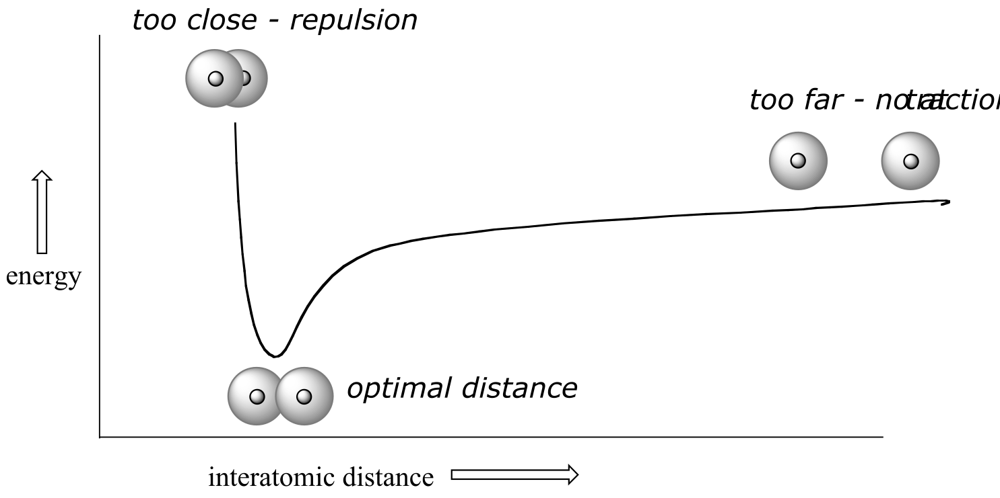fig 54
At first this repulsion is more than offset by the attraction between nuclei and electrons, but at a certain point, as the nuclei get even closer, the repulsive forces begin to overcome the attractive forces, and the potential energy of the system rises quickly. When the two nuclei are ‘too close’, we have an unstable, high-energy situation. There is a defined optimal distance between the nuclei in which the potential energy is at a minimum, meaning that the combined attractive and repulsive forces add up to the greatest overall attractive force. This optimal internuclear distance is the bond length. For the H2 molecule, the distance is 74 pm (picometers, 10-12 meters). Likewise, the difference in potential energy between the lowest energy state (at the optimal internuclear distance) and the state where the two atoms are completely separated is called the bond dissociation energy, or, more simply**, bond strength**. For the hydrogen molecule, the H-H bond strength is equal to about 435 kJ/mol.
Every covalent bond in each molecule has a characteristic length and strength. In general, the length of a typical carbon-carbon single bond in an organic molecule is about 150 pm, while carbon-carbon double bonds are about 130 pm, carbon-oxygen double bonds are about 120 pm, and carbon-hydrogen bonds are in the range of 100 to 110 pm. The strength of covalent bonds in organic molecules ranges from about 234 kJ/mol for a carbon-iodine bond (in thyroid hormone, for example), about 410 kJ/mole for a typical carbon-hydrogen bond, and up to over 800 kJ/mole for a carbon-carbon triple bond. You can refer to tables in reference books such as the CRC Handbook of Chemistry and Physics for extensive lists of bond lengths and energies, and many other data for specific organic compounds.
It is not accurate, however, to picture covalent bonds as rigid sticks of unchanging length - rather, it is better to picture them as springs which have a defined length when relaxed, but which can be compressed, extended, and bent. This ‘springy’ picture of covalent bonds will become very important in chapter 4, when we study the analytical technique known as infrared (IR) spectroscopy.
One more characteristic of the covalent bond in H2 is important to consider at this point. The two overlapping 1s orbitals can be visualized as two spherical balloons being pressed together. This means that the bond has cylindrical symmetry: if we were to take a cross-sectional plane of the bond at any point, it would form a circle. This type of bond is referred to as a σ (sigma) bond.

(chemwiki.ucdavis.edu)
/@api/deki/files/38956/ac3b11e624201e0a249d7a24ab63c67c.jpg
fig 48
A σ bond can be formed by overlap of an s atomic orbital with a p atomic orbital. Hydrogen fluoride (HF) is an example:
fig 49
A σ bond can be formed by the overlap of two p orbitals. The covalent bond in molecular fluorine, F2, is a σ bond formed by the overlap of two half-filled 2p orbitals, one from each fluorine atom.
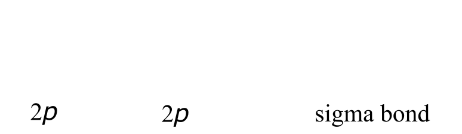fig 50
2.1B: sp3 hybrid orbitals and tetrahedral bonding#
Now let’s look more carefully at bonding in organic molecules, starting with methane, CH4. Recall the valence electron configuration of a carbon atom:
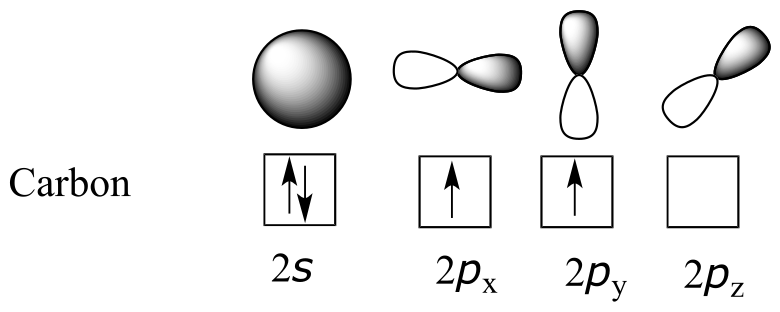This picture, however, is problematic in terms of bonding. How does the carbon form four bonds if it has only two half-filled p orbitals available for bonding? A hint comes from the experimental observation that the four C-H bonds in methane are arranged with tetrahedral geometry about the central carbon, and that each bond has the same length and strength. In order to explain this observation, valence bond theory relies on a concept called orbital hybridization. In this picture, the four valence orbitals of the carbon (one 2s and three 2p orbitals) combine mathematically (remember: orbitals are described by wave equations) to form four equivalent hybrid orbitals, which are named sp3 orbitals because they are formed from mixing one s and three p orbitals. In the new electron configuration, each of the four valence electrons on the carbon occupies a single sp3 orbital.
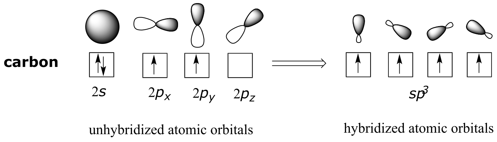fig 58
The sp3 hybrid orbitals, like the p orbitals of which they are partially composed, are oblong in shape, and have two lobes of opposite sign. Unlike the p orbitals, however, the two lobes are of very different size. While the unhybridized p orbitals are oriented perpendicular (90o) to each other, the sp3 hybrids are directed towards the four corners of a tetrahedron, meaning that the angle between any two orbitals is 109.5o.
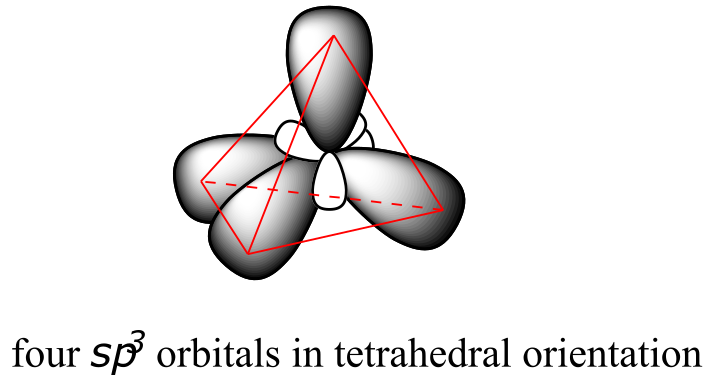View interactive 3D model: http://www.chemtube3d.com/orbitalshybrid.htm
(select ‘load sp3’ and ‘load H 1s’ to see orbitals)
fig 59
This geometric arrangement makes perfect sense if you consider that it is precisely this angle that allows the four orbitals (and the electrons in them) to be as far apart from each other as possible. This is simply a restatement of the Valence Shell Electron Pair Repulsion (VSEPR) theory that you learned in General Chemistry: electron pairs (in orbitals) will arrange themselves in such a way as to remain as far apart as possible, due to negative-negative electrostatic repulsion.
Each C-H bond in methane, then, can be described as a σ bond formed by overlap between a half-filled 1s orbital in a hydrogen atom and the larger lobe of one of the four half-filled sp3 hybrid orbitals in the central carbon. The length of the carbon-hydrogen bonds in methane is 109 pm.

fig 61
While previously we drew a Lewis structure of methane in two dimensions using lines to denote each covalent bond, we can now draw a more accurate structure in three dimensions, showing the tetrahedral bonding geometry. To do this on a two-dimensional page, though, we need to introduce a new drawing convention: the solid / dashed wedge system. In this convention, a solid wedge simply represents a bond that is meant to be pictured emerging from the plane of the page. A dashed wedge represents a bond that is meant to be pictured pointing into, or behind, the plane of the page. Normal lines imply bonds that lie in the plane of the page. This system takes a little bit of getting used to, but with practice your eye will learn to immediately ‘see’ the third dimension being depicted.
Exercise 2.1: Imagine that you could distinguish between the four hydrogen atoms in a methane molecule, and labeled them Ha through Hd. In the images below, the exact same methane molecule is rotated and flipped in various positions. Draw the missing hydrogen atom labels. (It will be much easier to do this if you make a model.)

fig 61a
Exercise 2.2: What kind of orbitals overlap to form the C-Cl bonds in chloroform, CHCl3?
How does this bonding picture extend to compounds containing carbon-carbon bonds? In ethane (CH3CH3), both carbons are sp3-hybridized, meaning that both have four bonds with tetrahedral geometry. The carbon-carbon bond, with a bond length of 154 pm, is formed by overlap of one sp3 orbital from each of the carbons, while the six carbon-hydrogen bonds are formed from overlaps between the remaining sp3 orbitals on the two carbons and the 1s orbitals of hydrogen atoms. All of these are σ bonds.

fig 62
Because they are formed from the end-on-end overlap of two orbitals, σ bonds are free to rotate. This means, in the case of ethane molecule, that the two methyl (CH3) groups can be pictured as two wheels on an axle, each one able to rotate with respect to the other.

fig 63
In chapter 3 we will learn more about the implications of rotational freedom in σ bonds, when we discuss the ‘conformation’ of organic molecules.
The sp3 bonding picture is also used to describe the bonding in amines, including ammonia, the simplest amine. Just like the carbon atom in methane, the central nitrogen in ammonia is *sp3-*hybridized. With nitrogen, however, there are five rather than four valence electrons to account for, meaning that three of the four hybrid orbitals are half-filled and available for bonding, while the fourth is fully occupied by a nonbonding pair (lone pair) of electrons.

fig 64
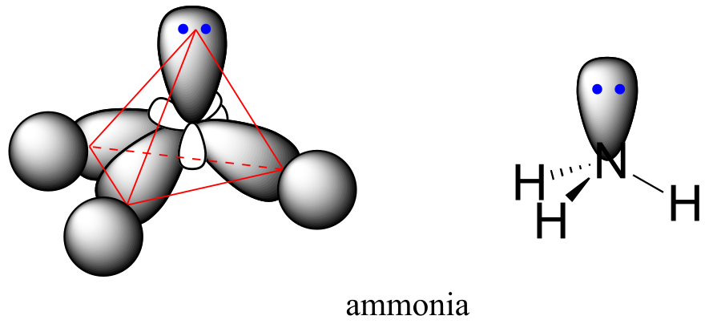
fig 65
The bonding arrangement here is also tetrahedral: the three N-H bonds of ammonia can be pictured as forming the base of a trigonal pyramid, with the fourth orbital, containing the lone pair, forming the top of the pyramid.
Recall from your study of VSEPR theory in General Chemistry that the lone pair, with its slightly greater repulsive effect, ‘pushes’ the three N-H σ bonds away from the top of the pyramid, meaning that the H-N-H bond angles are slightly less than tetrahedral, at 107.3˚ rather than 109.5˚.
VSEPR theory also predicts, accurately, that a water molecule is ‘bent’ at an angle of approximately 104.5˚. The bonding in water results from overlap of two of the four sp3 hybrid orbitals on oxygen with 1s orbitals on the two hydrogen atoms. The two nonbonding electron pairs on oxygen are located in the two remaining sp3 orbitals.
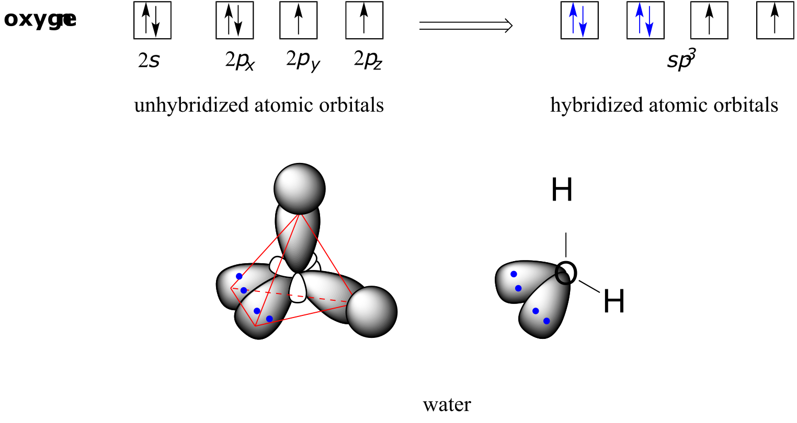fig 66
Exercise 2.3: Draw, in the same style as the figures above, orbital pictures for the bonding in methylamine.
summary image of sp3 bonding in CH4, NH3, and H2O
Video tutorial: sp3 hybridization
2.1C*: sp2* and sp hybrid orbitals and π bonds#
The valence bond theory, along with the hybrid orbital concept, does a very good job of describing double-bonded compounds such as ethene. Three experimentally observable characteristics of the ethene molecule need to be accounted for by a bonding model:
1) Ethene is a planar (flat) molecule.
2) Bond angles in ethene are approximately 120o, and the carbon-carbon bond length is 134 pm, significantly shorter than the 154 pm single carbon-carbon bond in ethane.
3) There is a significant barrier to rotation about the carbon-carbon double bond.
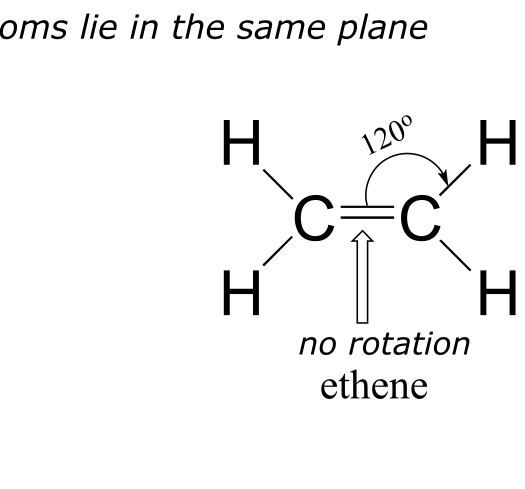
fig 67
Clearly, these characteristics are not consistent with an sp3 hybrid bonding picture for the two carbon atoms. Instead, the bonding in ethene is described by a model involving the participation of a different kind of hybrid orbital. Three atomic orbitals on each carbon – the 2s, 2px and 2py orbitals – combine to form three sp2 hybrids, leaving the 2pz orbital unhybridized.

fig 68
The three sp2 hybrids are arranged with trigonal planar geometry, pointing to the three corners of an equilateral triangle, with angles of 120° between them. The unhybridized 2pz orbital is perpendicular to this plane (in the next several figures, sp2 orbitals and the σ bonds to which they contribute are represented by lines and wedges; only the 2pz orbitals are shown in the ‘space-filling’ mode).
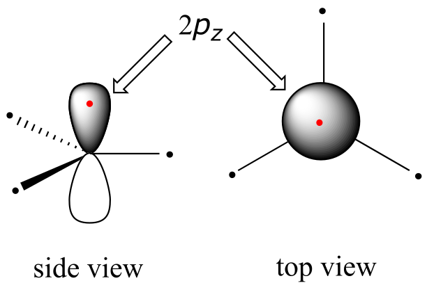
fig 69
The carbon-carbon double bond in ethene consists of one σ bond, formed by the overlap of two sp2 orbitals, and a second bond, called a π (pi) bond, which is formed by the side-by-side overlap of the two unhybridized 2pz orbitals from each carbon.

fig 70
interactive model (select ‘show remaining p orbitals)
Unlike a σ bond, a π bond does not have cylindrical symmetry. If rotation about this bond were to occur, it would involve disrupting the side-by-side overlap between the two 2pz orbitals that make up the π bond. The presence of the π bond thus ‘locks’ the six atoms of ethene into the same plane. This argument extends to larger alkene groups: in each case, six atoms lie in the same plane.
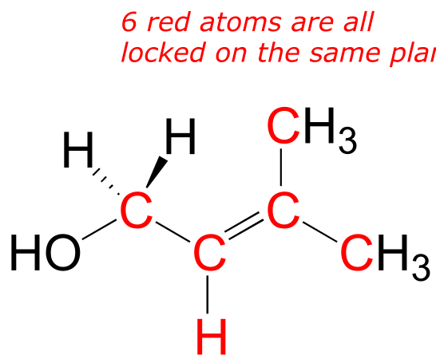
fig 71
Exercise 2.4: Redraw the structures below, indicating the six atoms that lie in the same plane due to the carbon-carbon double bond.
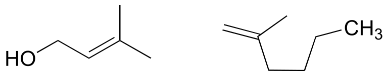
fig 71a
Exercise 2.5: What is wrong with the way the following structure is drawn?
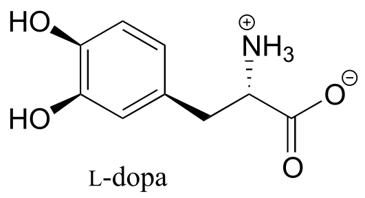
fig 71c
A similar picture can be drawn for the bonding in carbonyl groups, such as formaldehyde. In this molecule, the carbon is sp2-hybridized, and we will assume that the oxygen atom is also sp2 hybridized. The carbon has three σ bonds: two are formed by overlap between sp2 orbitals with 1s orbitals from hydrogen atoms, and the third σ bond is formed by overlap between the remaining carbon sp2 orbital and an sp2 orbital on the oxygen. The two lone pairs on oxygen occupy its other two sp2 orbitals.
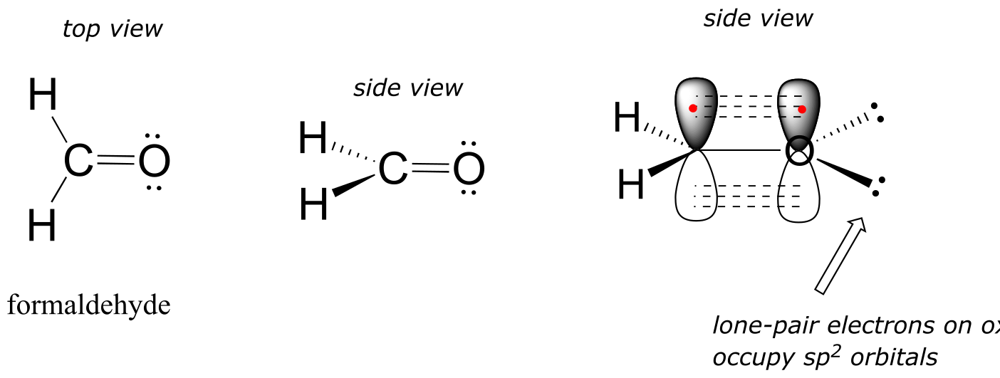
fig 2
interactive model (select ‘show p orbital on C and O’)
The π bond is formed by side-by-side overlap of the unhybridized 2pz orbitals on the carbon and the oxygen. Just like in alkenes, the 2pz orbitals that form the π bond are perpendicular to the plane formed by the σ bonds.
Exercise 2.6:
a) Draw a figure showing the bonding picture for the imine below, and include a verbal description of the orbital overlaps used to form the carbon-nitrogen bond.
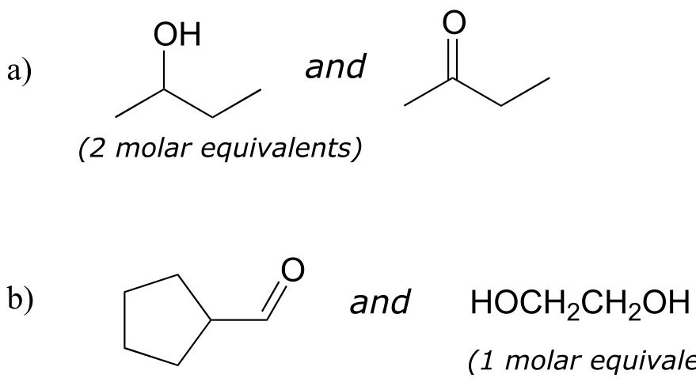
c) In your drawing for part b, what kind of orbital holds the nitrogen lone pair?
fig 72a
Video tutorial: sp2 hybridization
Recall from section 1.2 that carbocations are transient, high-energy species in which a carbon only has three bonds (rather than the usual four) and a positive formal charge. We will have much more to say about carbocations in this and later chapters. For now, though, the important thing to understand is that a carbocation can be described as an sp2-hybridized carbon with an empty p orbital perpendicular to the plane of the σ bonds.
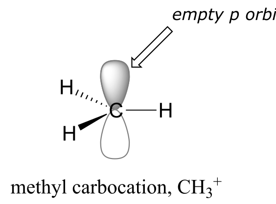
fig 72b another image
Finally, the hybrid orbital concept applies as well to triple-bonded groups, such as alkynes and nitriles. Consider, for example, the structure of ethyne (common name acetylene), the simplest alkyne.

Both the VSEPR theory and experimental evidence tells us that the molecule is linear: all four atoms lie in a straight line. The carbon-carbon triple bond is only 120 pm long, shorter than the double bond in ethene, and is very strong, about 837 kJ/mol. In the hybrid orbital picture of acetylene, both carbons are sp-hybridized. In an sp-hybridized carbon, the 2s orbital combines with the 2px orbital to form two sp hybrid orbitals that are oriented at an angle of 180° with respect to each other (eg. along the x axis). The 2py and 2pz orbitals remain unhybridized, and are oriented perpendicularly along the y and z axes, respectively.
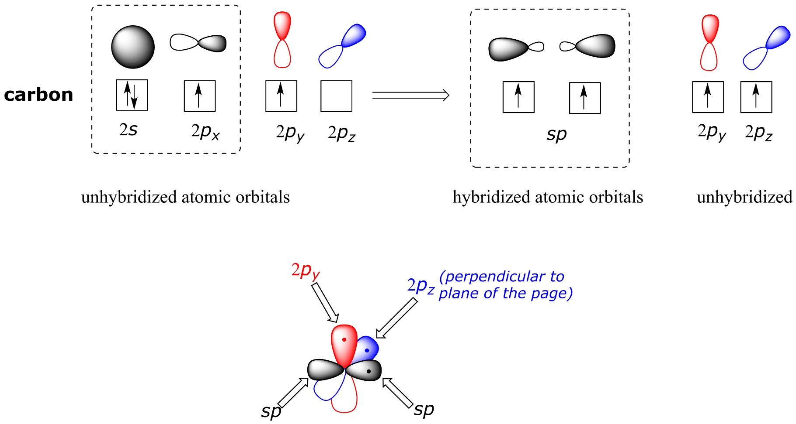fig 73
The carbon-carbon σ bond, then, is formed by the overlap of one sp orbital from each of the carbons, while the two carbon-hydrogen σ bonds are formed by the overlap of the second sp orbital on each carbon with a 1s orbital on a hydrogen. Each carbon atom still has two half-filled 2py and 2pz orbitals, which are perpendicular both to each other and to the line formed by the σ bonds. These two perpendicular pairs of p orbitals form two π bonds between the carbons, resulting in a triple bond overall (one σ bond plus two π bonds).
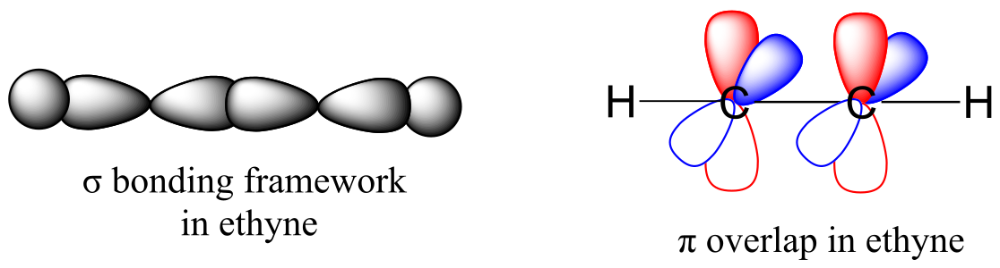
fig 74 another image
Exercise 2.7: Look at the structure of thiamine diphosphate in Table 6. Identify the hybridization of all carbon atoms in the molecule.
Video tutorial: sp hybridization
The hybrid orbital concept nicely explains another experimental observation: single bonds adjacent to double and triple bonds are progressively shorter and stronger than single bonds adjacent to other single bonds. Consider for example, the carbon-carbon single bonds in propane, propene, and propyne.
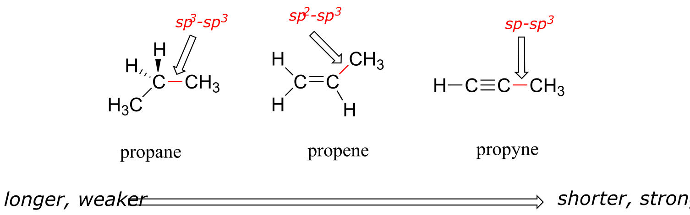
fig 75
All three are single, σ bonds; the bond in propyne is shortest and strongest, while the bond in propane is longest and weakest. The explanation is relatively straightforward. An sp orbital is composed of one s orbital and one p orbital, and thus it has 50% s character and 50% p character. sp2 orbitals, by comparison, have 33% s character and 67% p character, while sp3 orbitals have 25% s character and 75% p character. Because of their spherical shape, 2s orbitals are smaller, and hold electrons closer and ‘tighter’ to the nucleus, compared to 2p orbitals. It follows that electrons in an sp orbital, with its greater s character, are closer to the nucleus than electrons in an sp2 or sp3 orbital. Consequently, bonds involving sp-sp3 overlap (as in propyne) are shorter and stronger than bonds involving sp2-sp3 overlap (as in propene). Bonds involving sp3-sp3 overlap (as in propane) are the longest and weakest of the three.
Exercise 2.8:
a) What kinds of orbitals are overlapping in bonds b-i indicated below? Be sure to distinguish between σ and π bonds. An example is provided for bond ‘a’.
b) In what kind of orbital is the lone pair of electrons located on the nitrogen atom of bond a? Of bond e?

Section 2.2: Molecular orbital theory, conjugation, and aromaticity#
Valence bond theory does a remarkably good job at explaining the bonding geometry of many of the functional groups in organic compounds. There are some areas, however, where the valence bond theory falls short. It fails to adequately account, for example, for some interesting properties of compounds that contain alternating double and single bonds. To understand these properties, we need to think about chemical bonding in a new way, using the ideas of molecular orbital (MO) theory.
2.2A: Another look at the H2 molecule using molecular orbital theory#
Let’s go back and consider again the simplest possible covalent bond: the one in molecular hydrogen (H2). When we described the hydrogen molecule using valence bond theory, we said that the two 1s orbitals from each atom overlap, allowing the two electrons to be shared and thus forming a covalent bond. In molecular orbital theory, we make a further statement: we say that the two atomic 1s orbitals mathematically combine to form two new orbitals. Recall that an atomic orbital (such as the 1s orbital of a hydrogen atom) describes a region of space around a single atom inside which electrons are likely to be found. A molecular orbital describes a region of space around two or more atoms inside which electrons are likely to be found.
Mathematical principles tell us that when orbitals combine, the number of orbitals before the combination takes place must equal the number of new orbitals that result from the combination – orbitals don’t just disappear! We saw this previously when we discussed hybrid orbitals: one s and three p orbitals make four sp3 hybrids. When two atomic 1s orbitals combine in the formation of H2, the result is two sigma (σ) molecular orbitals.

fig 100
According to MO theory, one σ orbital is lower in energy than either of the two isolated atomic 1s orbitals –this lower σ orbital is referred to as a bonding molecular orbital. The second, σ* orbital is higher in energy than the two atomic 1s orbitals, and is referred to as an antibonding molecular orbital.
The bonding σ orbital, which holds both electrons in the ground state of the molecule, is egg-shaped, encompassing the two nuclei, and with the highest likelihood of electrons being in the area between the two nuclei. The high-energy, antibonding σ* orbital can be visualized as a pair of droplets, with areas of higher electron density near each nucleus and a ‘node’, (area of zero electron density) midway between the two nuclei.
Remember that we are thinking here about electron behavior as wave behavior. When two separate waves combine, they can do so with constructive interference, where the two amplitudes build up and reinforce one another, or destructive interference, where the two amplitudes cancel one another out. Bonding MOs are the consequence of constructive interference between two atomic orbitals, which results in an attractive interaction and an increase in electron density between the nuclei. Antibonding MO’s are the consequence of destructive interference which results in a repulsive interaction and a region of zero electron density between the nuclei (in other words, a node).
Following the same aufbau (‘building up’) principle you learned in General Chemistry for writing out electron configurations, we place the two electrons in the H2 molecule in the lowest energy molecular orbital, which is the (bonding) σ orbital. The bonding (attracting) MO is full, and the antibonding (repulsing) MO is empty.
2.2B: Molecular orbital theory and conjugated π bonds#
The advantage of using MO theory to understand bonding in organic molecules becomes more apparent when we think about π bonds. Let’s first consider the π bond in ethene from an MO theory standpoint (in this example we will be disregarding the σ bonds in the molecule, and thinking only about the π bond). We start with two atomic orbitals: one unhybridized 2p orbital from each carbon. Each contains a single electron. In MO theory, the two atomic combine mathematically to form two π molecular orbitals, one a low-energy π bonding orbital and one a high-energy π* antibonding orbital.
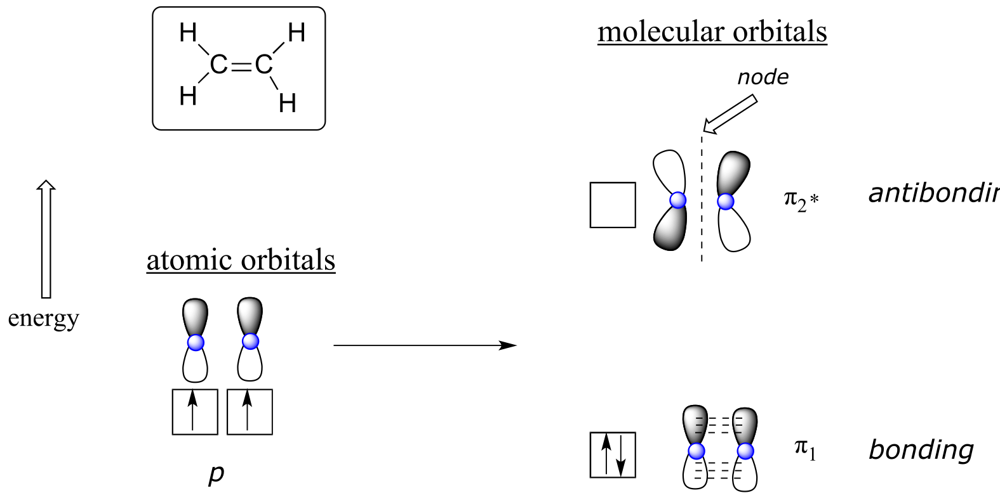
fig 101
In the bonding π orbital, the two shaded lobes of the p orbitals interact constructively with each other, as do the two unshaded lobes (remember, the arbitrary shading choice represents mathematical (+) and (-) signs for the mathematical wavefunction describing the orbital). There is increased electron density between the two carbon nuclei in the molecular orbital - it is a bonding interaction.
In the higher-energy antibonding π* orbital, the shaded lobe of one p orbital interacts destructively with the unshaded lobe of the second p orbital, leading to a node between the two nuclei and overall repulsion between the carbon nuclei.
Again using the ‘building up’ principle, we place the two electrons in the lower-energy, bonding π molecular orbital. The antibonding π* orbital remains empty.
Next, we’ll consider the 1,3-butadiene molecule. From valence orbital theory alone we might expect that the C2-C3 bond in this molecule, because it is a σ bond, would be able to rotate freely.

fig 102
Experimentally, however, it is observed that there is a significant barrier to rotation about the C2-C3 bond, and that the entire molecule prefers to be planar. In addition, the C2-C3 bond is 148 pm long, shorter than a typical carbon-carbon single bond (about 154 pm), though longer than a typical double bond (about 134 pm).
Molecular orbital theory accounts for these observations with the concept of delocalized π bonds. In this picture, the four p atomic orbitals combine mathematically to form four π molecular orbitals of increasing energy. Two of these - the bonding π orbitals - are lower in energy than the p atomic orbitals from which they are formed, while two - the antibonding π orbitals - are higher in energy.

fig 103
The lowest energy molecular orbital, π1, has only constructive interaction and zero nodes. Higher in energy, but still lower than the isolated p orbitals, the π2 orbital has one node but two constructive interactions - thus it is still a bonding orbital overall. Looking at the two antibonding orbitals, π3* has two nodes and one constructive interaction, while π4* has three nodes and zero constructive interactions.
By the aufbau principle, the four electrons from the isolated 2pz atomic orbitals are placed in the bonding π1 and π2 MO’s. Because π1 includes constructive interaction between C2 and C3, there is a degree, in the 1,3-butadiene molecule, of π-bonding interaction between these two carbons, which accounts for its shorter length and the barrier to rotation. The valence bond picture of 1,3-butadiene shows the two π bonds as being isolated from one another, with each pair of π electrons ‘stuck’ in its own π bond. However, molecular orbital theory predicts (accurately) that the four π electrons are to some extent delocalized, or ‘spread out’, over the whole π system.
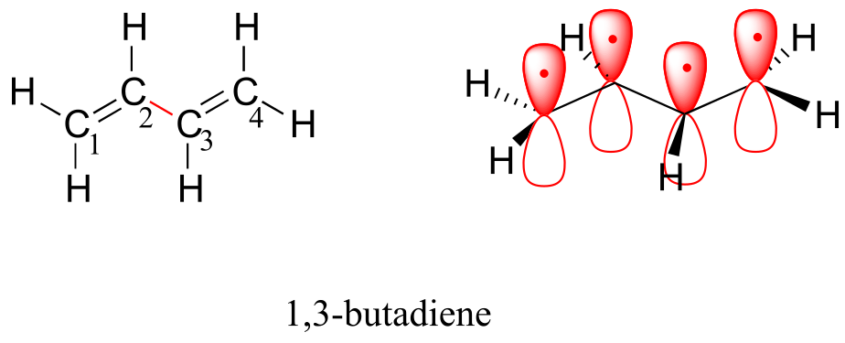
fig another image
1,3-butadiene is the simplest example of a system of conjugated π bonds. To be considered conjugated, two or more π bonds must be separated by only one single bond – in other words, there cannot be an intervening sp3-hybridized carbon, because this would break up the overlapping system of parallel p orbitals. In the compound below, for example, the C1-C2 and C3-C4 double bonds are conjugated, while the C6-C7 double bond is isolated from the other two π bonds by sp3-hybridized C5.
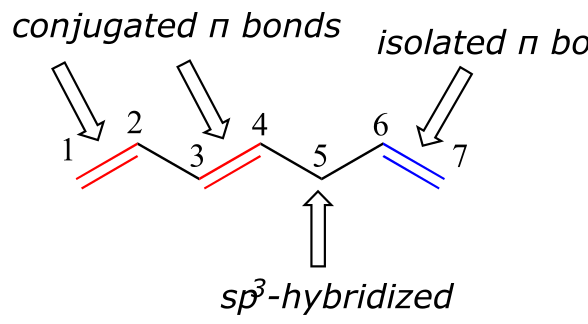
fig 105
A very important concept to keep in mind is that there is an inherent thermodynamic stability associated with conjugation. This stability can be measured experimentally by comparing the heat of hydrogenation of two different dienes. (Hydrogenation is a reaction type that we will learn much more about in chapter 15: essentially, it is the process of adding a hydrogen molecule - two protons and two electrons - to a π bond). When the two conjugated double bonds of 1,3-pentadiene are ‘hydrogenated’ to produce pentane, about 225 kJ is released per mole of pentane formed. Compare that to the approximately 250 kJ/mol released when the two isolated double bonds in 1,4-pentadiene are hydrogenated, also forming pentane.
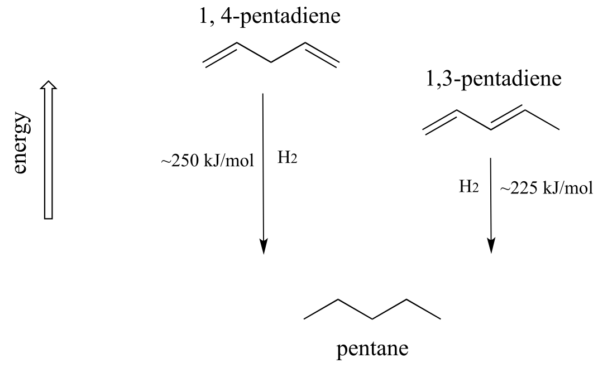
fig 106
The conjugated diene is lower in energy: in other words, it is more stable. In general, conjugated π bonds are more stable than isolated π bonds.
Conjugated π systems can involve oxygen and nitrogen atoms as well as carbon. In the metabolism of fat molecules, some of the key reactions involve alkenes that are conjugated to carbonyl groups.

fig 107
In chapter 4, we will see that MO theory is very useful in explaining why organic molecules that contain extended systems of conjugated π bonds often have distinctive colors. β-carotene, the compound responsible for the orange color of carrots, has an extended system of 11 conjugated π bonds.
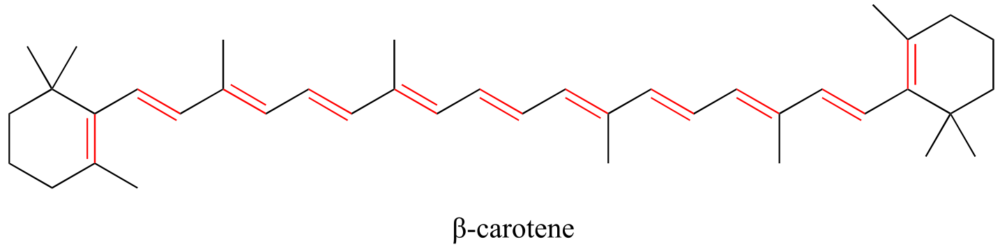
fig 108
Exercise 2.9: Identify all conjugated and isolated double bonds in the structures below. For each conjugated π system, specify the number of overlapping p orbitals, and how many π electrons are shared among them.

{kind=link}
{kind=link}
{kind=link}
{kind=link}
{kind=link}
{kind=link}
{kind=link}
{kind=link}
{kind=link}
fig 6
Exercise 2.10: Identify all isolated and conjugated π bonds in lycopene, the red-colored compound in tomatoes. How many π electrons are contained in the conjugated system?

fig 6a
2.2C: Aromaticity#
Molecular orbital theory is especially helpful in explaining the unique properties of aromatic compounds such as benzene.
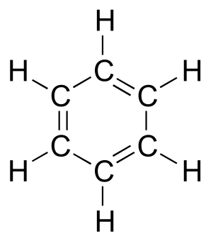
fig 109
Although it is most often drawn with three double bonds and three single bonds, in fact all of the carbon-carbon bonds in benzene are exactly the same length (138 pm). In addition, the π bonds in benzene are significantly less reactive than ‘normal’ π bonds, either isolated or conjugated. Something about the structure of benzene makes its π bonding arrangement especially stable. This ‘something’ has a name: it is called ‘aromaticity’.
What exactly is this ‘aromatic’ property that makes the π bonds in benzene so stable? In large part, the answer to this question lies in the fact that benzene is a cyclic molecule in which all of the ring atoms are sp2-hybridized. This allows the π electrons to be delocalized in molecular orbitals that extend all the way around the ring, above and below the plane. For this to happen, of course, the ring must be planar – otherwise the p orbitals couldn’t overlap properly. Benzene is indeed known to be a flat molecule.
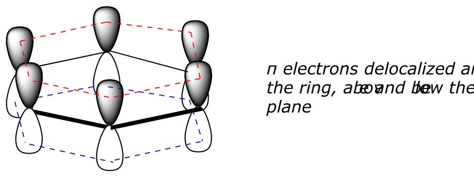
fig 110
{kind=link}
interactive model (select ‘show remaining p orbital on C’)
Do all cyclic molecules with alternating single and double bonds have this same aromatic stability? The answer, in fact, is ‘no’. The eight-membered cyclooctatetraene ring shown below is not flat, and its π bonds react like ‘normal’ alkenes.
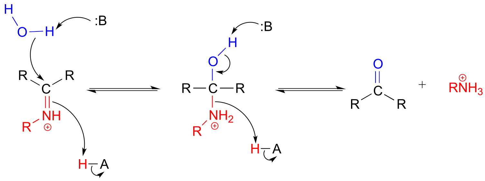
fig 111
{kind=link}
Clearly it takes something more to be aromatic, and this can best be explained with molecular orbital theory. Let’s look at an energy diagram of the π molecular orbitals in benzene.
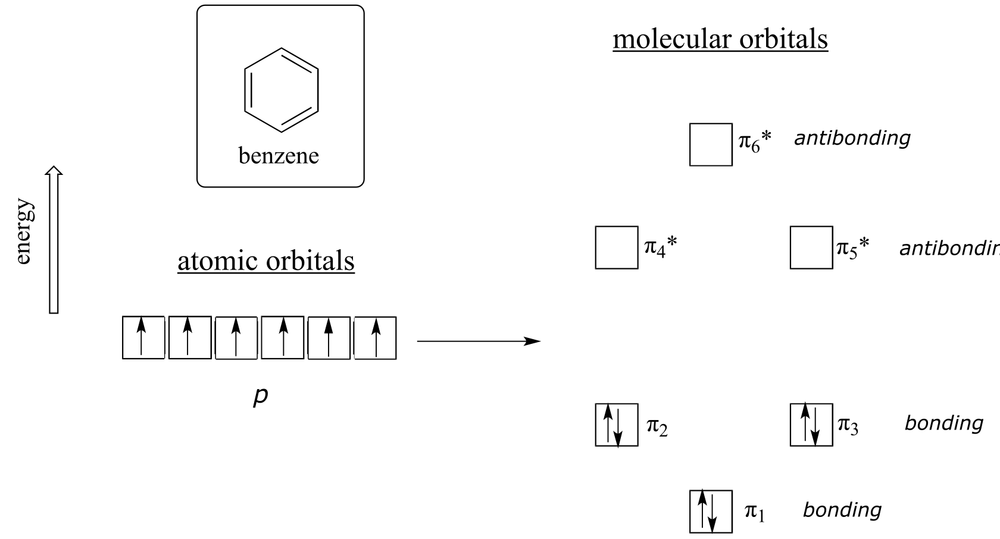
fig 112
Quantum mechanical calculations tell us that the six π molecular orbitals in benzene, formed from six atomic p orbitals, occupy four separate energy levels. π 1 and π 6* have unique energy levels, while the π 2 - π 3 and π 4*- π 5* pairs are degenerate, meaning they are at the same energy level. When we use the aufbau principle to fill up these orbitals with the six π electrons in benzene, we see that the bonding orbitals are completely filled, and the antibonding orbitals are empty. This gives us a good clue to the source of the special stability of benzene: a full set of bonding MO’s is similar in many ways to the ‘full shell’ of electrons in the atomic orbitals of the stable noble gases helium, neon, and argon.
Now, let’s do the same thing for cyclooctatetraene, which we have already learned is not aromatic.

fig 113
The result of molecular orbital calculations tells us that the lowest and highest energy MOs (π 1 and π 8*) have unique energy levels, while the other six form degenerate pairs. Notice that π 4 and π 5 are at the same energy level as the isolated 2pz atomic orbitals: these are therefore neither bonding nor antibonding, rather they are referred to as nonbonding MOs. Filling up the MOs with the eight π electrons in the molecule, we find that the last two electrons are unpaired and fall into the two degenerate nonbonding orbitals. Because we don’t have a perfect filled shell of bonding MOs, our molecule is not aromatic. As a consequence, each of the double bonds in cyclooctatetraene acts more like an isolated double bond.
Here, then, are the conditions that must be satisfied for a molecule or group to be considered aromatic:
Criteria for aromaticity:
The molecule or group must be cyclic.
The ring must be planar.
Each atom in the ring must be sp2-hybridized.
The number of π electrons in the ring must equal 4n+2, where n is any positive integer including zero.
Rule #4 is known as the Hückel rule, named after Erich Hückel, a German scientist who studied aromatic compounds in the 1930’s. If n = 0, the Hückel number is 2. If n = 1, the Hückel number is 6 (the Hückel number for benzene). The series continues with 10, 14, 18, 22, and so on. Cyclooctatetraene has eight π electrons, which is not a Hückel number. Because six is such a common Hückel number, chemists often use the term ‘aromatic sextet’.
Benzene rings are ubiquitous in biomolecules and drugs - below are just a few examples.

fig 114
Recall that a benzene ring with a hydoxyl substituent -such as seen in the tyrosine structure above - is called a phenol.
Heterocycles - cyclic structures in which the ring atoms may include oxygen or nitrogen - can also be aromatic. Pyridine, for example, is an aromatic heterocycle. In the bonding picture for pyridine, the nitrogen is in the imine form: it is sp2-hybridized, with two of the three sp2 orbitals forming σ overlaps with the sp2 orbitals of neighboring carbon atoms, and the third nitrogen sp2 orbital containing the lone pair. The unhybridized p orbital contains a single electron, which is part of the 6 π-electron system delocalized around the ring.
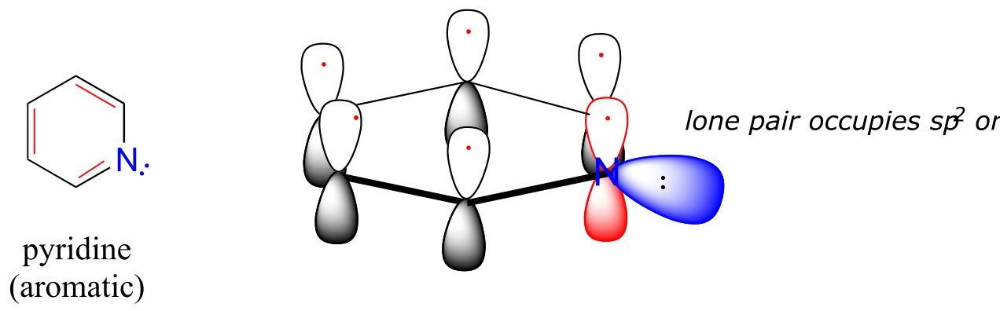fig 8a

(see links at end of chapter)fig 8b
Pyridoxine, commonly known as vitamin B6, and nicotine are both substituted pyridines.

fig 115
Pyrrole is a five-membered aromatic heterocycle. In pyrrole, the lone pair electrons on the sp2-hybridized nitrogen are part of the aromatic sextet (contrast this to pyridine, where the lone pair occupies one of the sp2 hybrid orbitals).
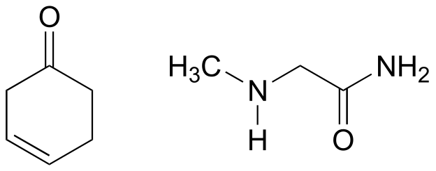fig 116
Why don’t we assume that the nitrogen in pyrrole is sp3-hybridized, like a normal secondary amine? The answer is simple: if it were, then pyrrole could not be aromatic, and thus it would not have the stability associated with aromaticity. In general, if a molecule or group can be aromatic, it will be, just as water will always flow downhill if there is a downhill pathway available.
Imidazole is another important example of an aromatic heterocycle found in biomolecules - the side chain of the amino acid histidine contains an imidazole ring.

fig 117 interactive model
In imidazole, one nitrogen is ‘pyrrole-like’ (the lone pair contributes to the aromatic sextet) and one is ‘pyridine-like’ (an imine - the lone pair is located in an sp2 orbital, and is not part of the aromatic sextet).
Fused-ring structures can also fulfill the Hückel criteria, and often have many of the same properties as monocyclic aromatic compounds, including a planar structure. Indole (a functional group on the side chain of the amino acid tryptophan) and purine (similar in structure to the guanine and adenine bases in DNA and RNA) both have a total of ten π electrons delocalized around two rings.
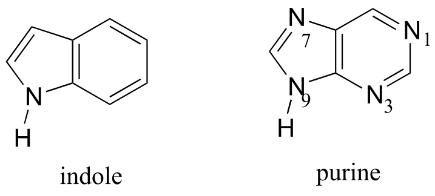
fig 118
The nucleic acid bases of DNA and RNA - guanine, adenine, cytosine, thymine, and uracil - are all aromatic systems, with the characteristic aromatic properties of planarity and delocalized π electron density. When you study the structure and function of DNA and RNA in a biochemistry or molecular biology course, you will see that the planar shape of the bases plays a critically important role.

fig 119
interactive models:
adenine, guanine, uracil, thymine, cytosine
Exercise 2.11: Classify the nitrogen atoms of indole and purine in terms of where the lone pair electrons are located.
Exercise 2.12: Are the following molecules/ions aromatic? Explain, using criteria you learned in this section.
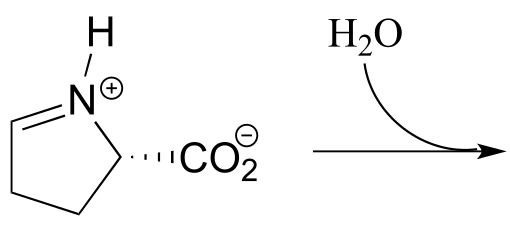
Section 2.3: Resonance#
2.3A: What is resonance?#
If we were to draw the structure of 1,2-dimethylbenzene, there are two ways that we could draw the double bonds:

fig 6
Which way is correct? There are two simple answers to this question: ‘both’ and ‘neither one’. Both ways of drawing the molecule are equally acceptable approximations of the bonding picture for the molecule, but neither one, by itself, is an accurate picture of the delocalized π bonds. The two alternative drawings, however, when considered together, give a much more accurate picture than either one on its own. The two drawings imply, when considered together, that the carbon-carbon bonds are not double bonds, not single bonds, but halfway in between.
These two drawings are an example of what is referred to in organic chemistry as resonance contributors: two or more different Lewis structures depicting the same molecule or ion that, when considered together, do a better job of approximating delocalized π bonding than any single structure. By convention, resonance contributors are linked by a double-headed arrow:

fig 9
In order to make it easier to visualize the difference between two resonance contributors, small curved arrows are often used. Each of these arrows (colored red for emphasis in the figure above) depicts the ‘movement’ of two π electrons. A few chapters from now when we begin to study organic reactions - a process in which electron density shifts and covalent bonds between atoms break and form - this ‘curved arrow notation’ will become extremely important in depicting electron movement. In the drawing of resonance contributors, however, this electron ‘movement’ occurs only in our minds, as we try to visualize delocalized π bonds. Nevertheless, use of the curved arrow notation is an essential skill that you will need to develop in drawing resonance contributors.
The depiction of benzene using the two resonance contributors A and B in the figure above does not imply that the molecule at one moment looks like structure A, then at the next moment shifts to look like structure B. Rather, at all moments, the molecule is a combination, or resonance hybrid of both A and B.
Caution! It is very important to be clear that in drawing two (or more) resonance contributors, we are not drawing two different molecules: they are simply different depictions of the exact same molecule. Furthermore, the double-headed resonance arrow does NOT mean that a chemical reaction has taken place.
Usually, derivatives of benzene (and phenyl groups, when the benzene ring is incorporated into a larger organic structure) are depicted with only one resonance contributor, and it is assumed that the reader understands that resonance hybridization is implied. This is the convention that will be used for the most part in this book. In other books or articles, you may sometimes see benzene or a phenyl group drawn with a circle inside the hexagon, either solid or dashed, as a way of drawing a resonance hybrid.
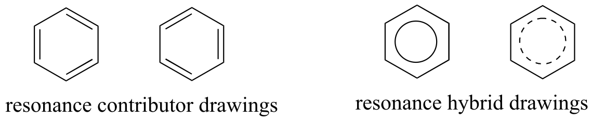
6
fig 10
2.3B: Resonance contributors for the carboxylate group#
The convention of drawing two or more resonance contributors to approximate a single structure may seem a bit clumsy to you at this point, but as you gain experience you will see that the practice is actually very useful when discussing the manner in which many functional groups react. Let’s next consider the carboxylate ion (the conjugate base of a carboxylic acid). As our example, we will use formate, the simplest possible carboxylate-containing molecule. The conjugate acid of formate is formic acid, which causes the painful sting you felt if you have ever been bitten by an ant.
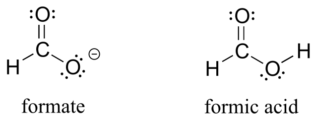
fig 11
Usually, you will see carboxylate groups drawn with one carbon-oxygen double bond and one carbon-oxygen single bond, with a negative formal charge located on the single-bonded oxygen. In actuality, however, the two carbon-oxygen bonds are the same length, and although there is indeed an overall negative formal charge on the group, it is shared equally (delocalized) between the two oxygens. Therefore, the carboxylate can be more accurately depicted by a pair of resonance contributors. Alternatively, a single structure can be used, with a dashed line depicting the resonance-delocalized π bond and the negative charge located in between the two oxygens.
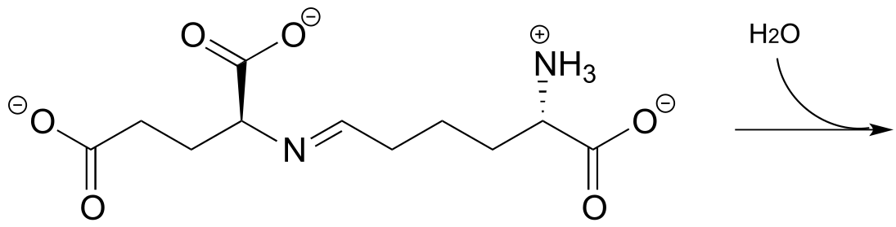
fig 12
Let’s see if we can correlate these drawing conventions to valence bond theory. The carbon is sp2-hybridized: the bond angles are close to 120˚, and the molecule is planar. Both carbon-oxygen σ bonds, then, are formed from the overlap of carbon sp2 orbitals and oxygen sp2 orbitals.
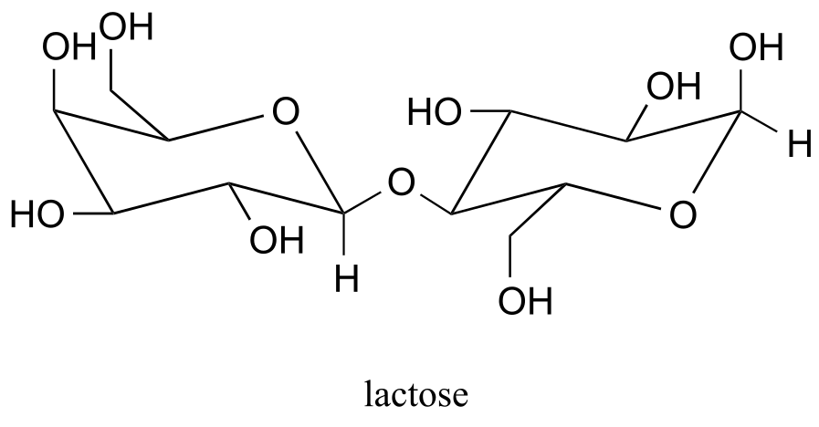
fig 13
In addition, the carbon and both oxygens each have an unhybridized 2pz orbital situated perpendicular to the plane of the σ bonds. These three 2pz orbitals are parallel to each other, and can overlap in a side-by-side fashion to form a delocalized π bond.

fig 14
Resonance contributor A shows oxygen #1 sharing a pair of electrons with carbon in a π bond, and oxygen #2 holding a lone pair of electrons in its p orbital. Resonance contributor B, on the other hand, shows oxygen #2 participating in the π bond with carbon, and oxygen #1 holding a lone pair in its p orbital. Overall, the situation is one of three parallel, overlapping p orbitals sharing four delocalized π electrons. Because there is one more electron than there are p orbitals, the system has an overall charge of –1. This is the kind of 3D picture that resonance contributors are used to approximate, and once you get some practice you should be able to quickly visualize overlapping p orbitals and delocalized π electrons whenever you see resonance structures being used. In this text, carboxylate groups will usually be drawn showing only one resonance contributor for the sake of simplicity, but you should always keep in mind that the two C-O bonds are equal, and that the negative charge is delocalized to both oxygens.
Exercise 2.13: There is a third resonance contributor for formate (which we will soon learn is considered a ‘minor’ contributor). Draw this resonance contributor.
Here’s another example, this time with a carbocation. Recall from section 2.1C that carbocations are sp2-hybridized, with an empty p orbital oriented perpendicular to the plane formed by three σ bonds. If a carbocation is adjacent to a double bond, then three p orbitals can overlap and share the two π electrons - another kind of conjugated π system in which the positive charge is shared over two carbons.
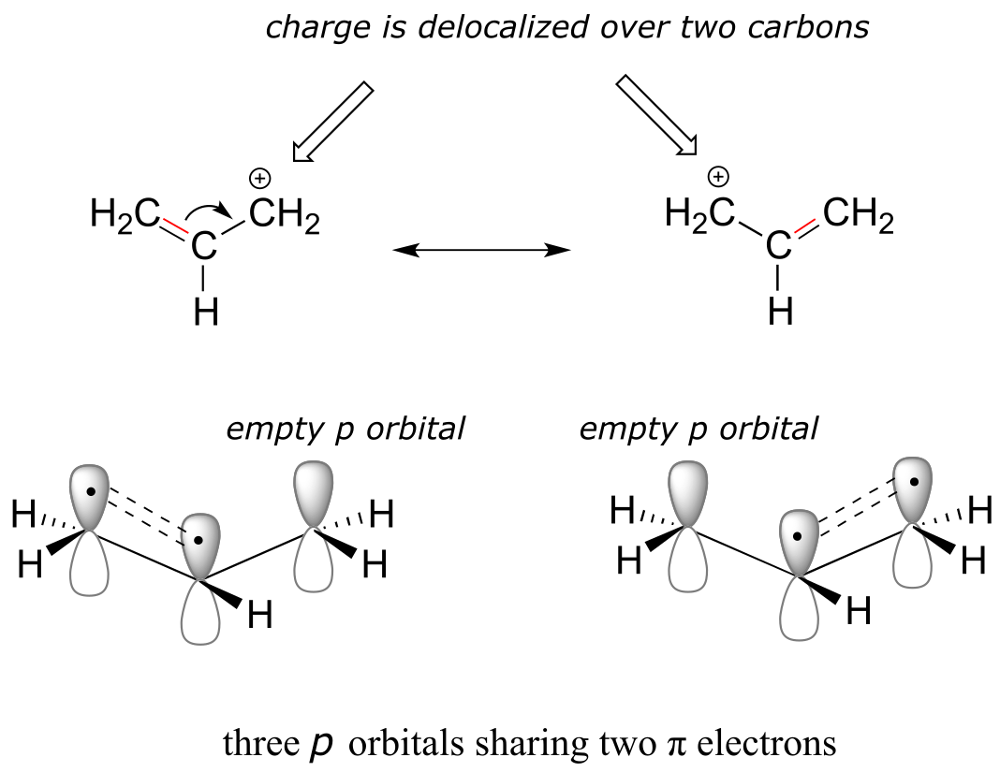
fig 14a
Exercise 2.14: Draw the resonance contributors that correspond to the curved, two-electron movement arrows in the resonance expressions below.
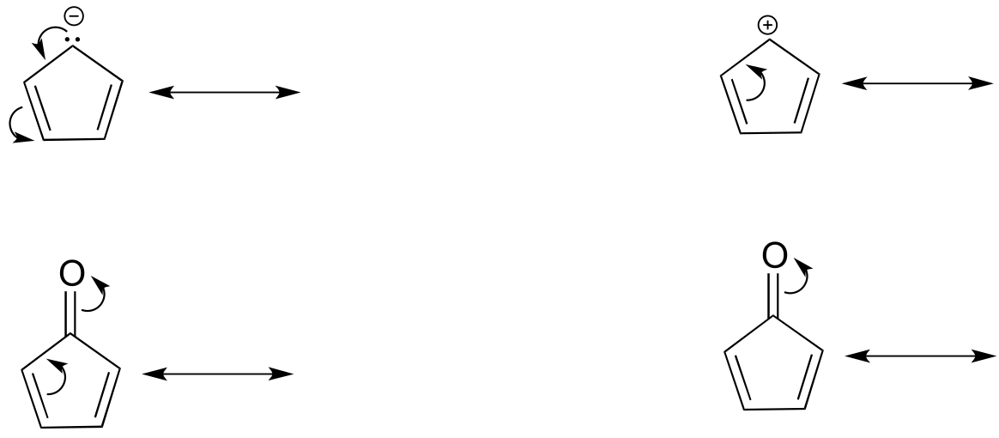
fig 14b
Exercise 2.15: In each resonance expression, draw curved two-electron movement arrows on the left-side contributor that shows how we get to the right-side contributor. Be sure to include formal charges.

fig 14c
2.3C: Rules for drawing resonance structures#
As you work on learning how to draw and interpret resonance structures, there are a few basic rules that you should keep in mind in order to avoid drawing nonsensical structures. All of these rules make perfect sense as long as you keep in mind that resonance contributors are merely a human-invented convention for depicting the delocalization of π electrons in conjugated systems.
Rules for drawing resonance structures:
1) When you see two different resonance contributors, you are not seeing a chemical reaction! Rather, you are seeing the exact same molecule or ion depicted in two different ways.
2) Resonance contributors involve the ‘imaginary movement’ of π-bonded electrons or of lone-pair electrons that are adjacent to (i.e. conjugated to) π bonds. You can never shift the location of electrons in σ bonds – if you show a σ bond forming or breaking, you are showing a chemical reaction taking place (see rule #1). Likewise, the positions of atoms in the molecule cannot change between two resonance contributors.
3) All resonance contributors for a molecule or ion must have the same net charge.
4) All resonance contributors must be drawn as proper Lewis structures, with correct formal charges. Never show curved ‘electron movement’ arrows that would lead to a situation where a second-row element (ie. carbon, nitrogen, or oxygen) has more than eight electrons: this would break the ‘octet rule’. Sometimes, however, we will draw resonance contributors in which a carbon atom has only six electrons (ie. a carbocation). In general, all oxygen and nitrogen atoms should have a complete octet of valence electrons.
To expand a bit on rule #4, there are really only three things we can do with curved arrows when drawing resonance structures. First, we can take the two electrons in a π bond and shift them to become a lone pair on an adjacent atom (arrow ‘a’ below).
Second, we can take a lone pair on an atom and put those two electrons into a π bond on the same atom (arrow ‘b’). Third, we can shift a π bond one position over (arrow c).

fig 15
Resonance arrows can also be combined - below, we show arrows a and b together:
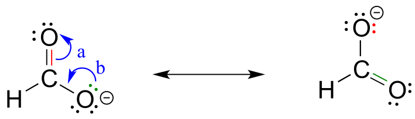
fig 15a
Notice that we do not exceed the octet rule on any atoms when we move electrons with arrows a, b and c. The resonance picture below shows an ‘illegal’ movement of electrons, because it would result in a carbon with five bonds, or 10 valence electrons (this would break the octet rule):
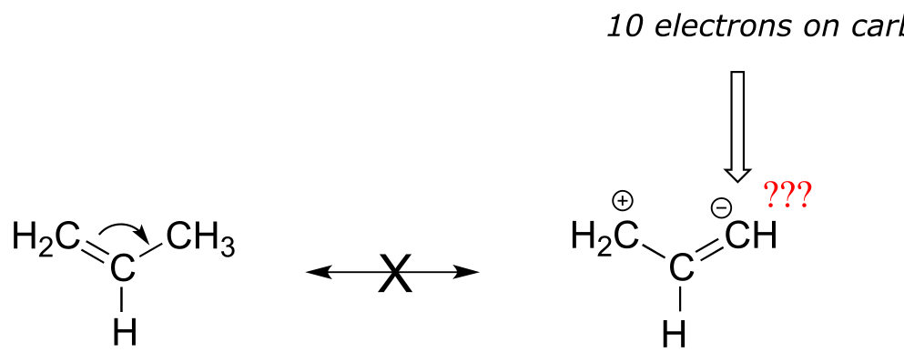
fig 15b
Always be very careful when drawing resonance structures that your arrows do only the three types of electron movement described above, and that you never exceed the octet rule on a second-row element. It is often helpful (but optional), to include all lone-pair electrons on oxygen and nitrogen in the drawing in order to keep track of valence electrons, avoid breaking the octet rule, and recognize when atoms have a negative or positive formal charge. Getting the ‘electron accounting’ correct is a big part of working with resonance contributors.
Below are a few more examples of ‘legal’ resonance expressions. Confirm for yourself that the octet rule is not exceeded for any atoms, and that formal charges are correct.

fig 15c
Exercise 2.16: Each of the ‘illegal’ resonance expressions below contains one or more mistakes. Explain what is incorrect in each.
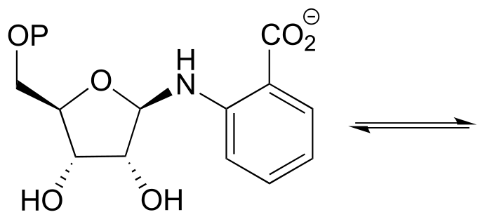
fig 16a
2.3D: Major vs minor resonance contributors#
Different resonance contributors do not always make the same contribution to the overall structure of the hybrid - rather, in many cases one contributor comes closer to depicting the actual bonding picture than another. In the case of carboxylates, contributors A and B below are equivalent in terms of their relative contribution to the hybrid structure. However, there is also a third resonance contributor ‘C, in which the carbon bears a positive formal charge and both oxygens are single-bonded and bear negative charges.
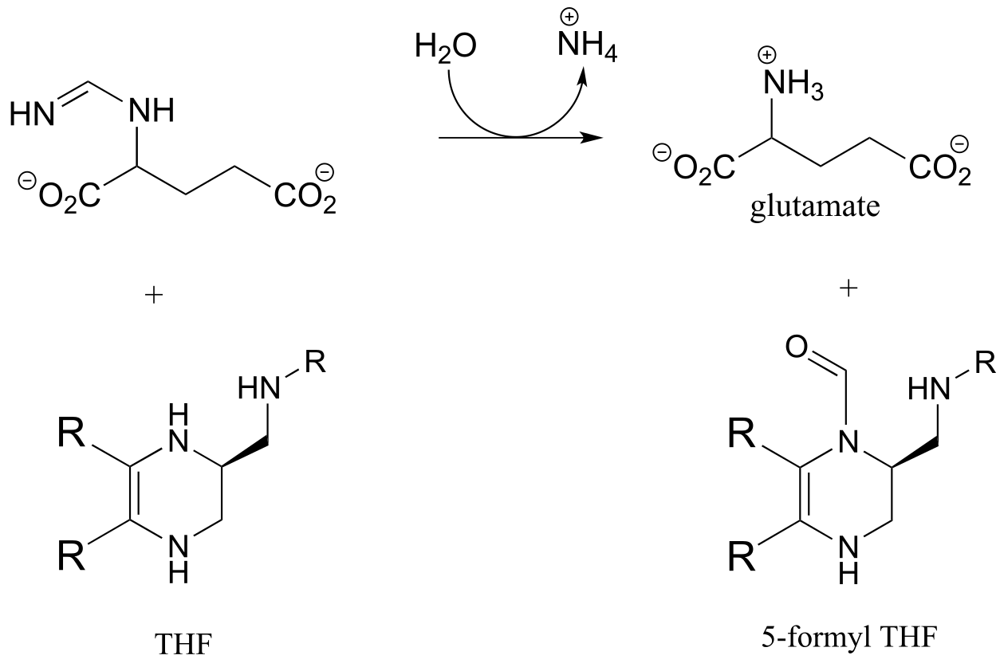
fig 17
Structure C makes a less important contribution to the overall bonding picture of the group relative to A and B. How do we know that structure C is the ‘minor’ contributor? There are four basic rules which you need to learn in order to evaluate the relative importance of different resonance contributors. We will number them 5-8 so that they may be added to in the ‘rules for resonance’ list from section 2.2C.
Rules for determining major and minor resonance contributors:
5) The carbon in contributor C does not have an octet – in general, resonance contributors in which a carbon does not fulfill the octet rule are relatively less important.
6) In structure C, a separation of charge has been introduced that is not present in A or B. In general, resonance contributors in which there is a greater separation of charge are relatively less important.
7) In structure C, there are only three bonds, compared to four in A and B. In general, a resonance structure with a lower number of total bonds is relatively less important.
8) The resonance contributor in which a negative formal charge is located on a more electronegative atom, usually oxygen or nitrogen, is more stable than one in which the negative charge is located on a less electronegative atom such as carbon. An example is in the upper left expression in the next figure.
Below are some additional examples of major and minor resonance contributors:

fig 17a
Why do we worry about a resonance contributor if it is the minor one? We will see later that very often a minor contributor can still be extremely important to our understanding of how a molecule reacts.
Exercise 2.17: a) Draw a minor resonance structure for acetone (IUPAC name 2-propanone). Explain why it is a minor contributor. b) Are acetone and 2-propanol resonance contributors of each other? Explain.
Exercise 2.18:
a) Draw four additional resonance contributors for the molecule below. Label each one as major or minor (the structure below is of a major contributor).

b) Draw four resonance contributors showing how the positive charge on the side chain of the (cationic) amino acid arginine can be delocalized.
Exercise 2.19: Draw three resonance contributors of methyl acetate (IUPAC name methyl methanoate), and order them according to their relative importance to the bonding picture of the molecule. Explain your reasoning.
2.3E: Resonance and peptide bonds#
What is the hybridization state of the nitrogen atom in an amide? At first glance, it would seem logical to say that it is sp3-hybridized, because, like the nitrogen in an amine, the Lewis structure shows three single bonds and a lone pair. The picture looks quite different, though, if we consider another resonance contributor in which the nitrogen has a double bond to the carbonyl carbon: in this case, we would have to say that applicable hybridization is sp2, and the bonding geometry trigonal planar rather than tetrahedral.
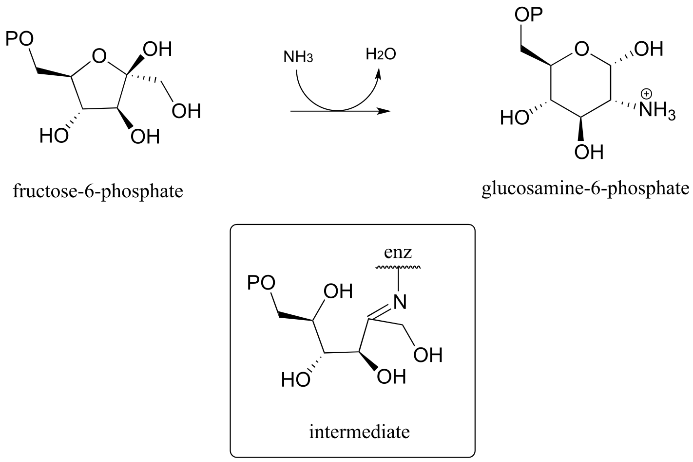
fig 18a
In fact, the latter picture is more accurate: the lone pair of electrons on an amide nitrogen are not localized in an sp3 orbital, rather, they are delocalized as part of a conjugated π system, and the bonding geometry around the nitrogen is trigonal planar as expected for sp2 hybridization. This is a good illustration of an important point: conjugation and the corresponding delocalization of electron density is stabilizing, thus if conjugation can occur, it probably will.
One of the most important examples of amide groups in nature is the ‘peptide bond’ that links amino acids to form polypeptides and proteins.
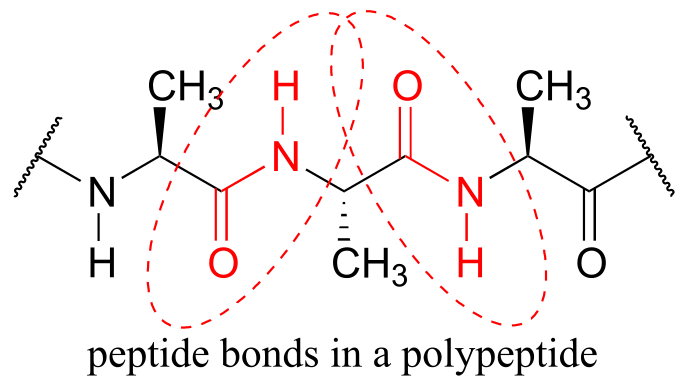
fig 18
Critical to the structure of proteins is the fact that, although it is conventionally drawn as a single bond, the C-N bond in a peptide linkage has a significant barrier to rotation, indicating that to some degree, C-N π overlap is present - in other words, there is some double bond character, and the nitrogen is sp2 hybridized with trigonal planar geometry.
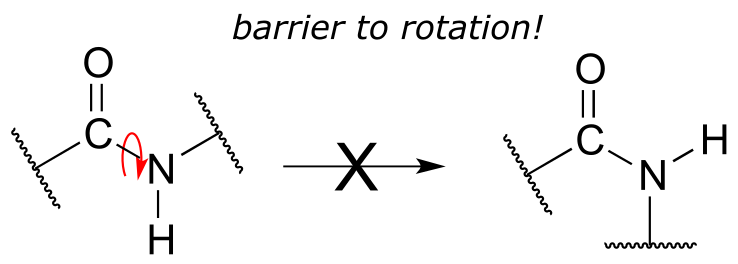
fig 18
The barrier to rotation in peptide bonds is an integral part of protein structure, introducing more rigidity to the protein’s backbone. If there were no barrier to rotation in a peptide bond, proteins would be much more ‘floppy’ and three dimensional folding would be very different.
Interactive model of a Leu-Ala peptide:
note the trigonal planar geometry of the peptide bond nitrogen!
Exercise 2.20: Draw two pictures showing the unhybridized p orbitals and the location of π electrons in methyl amide. One picture should represent the major resonance contributor, the other the minor contributor. How many overlapping p orbitals are sharing how many π-bonded electrons?
Exercise 2.21: Draw two pictures showing the unhybridized p orbitals and the location of π electrons in the ‘enolate’ anion shown below. One picture should represent the major resonance contributor, the other the minor contributor. How many overlapping p orbitals are sharing how many π-bonded electrons?
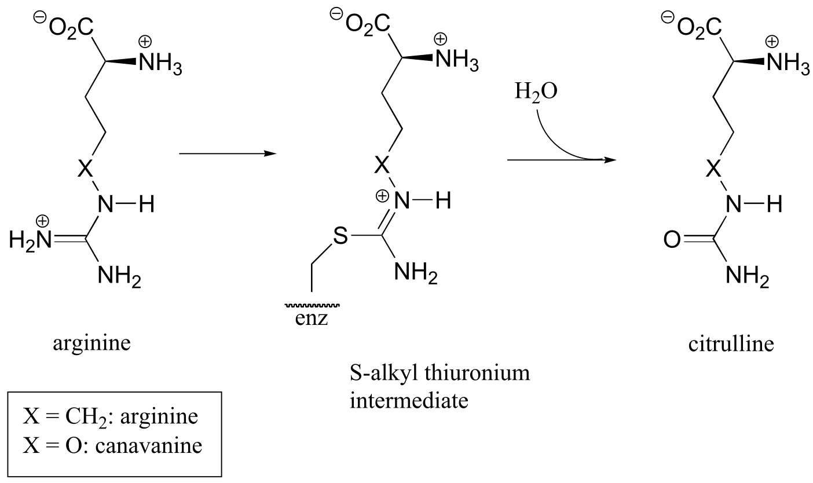
fig 20
Exercise 2.22: Below is a minor resonance contributor of a species known as an ‘enamine’, which we will study more in chapter 12. Draw the major resonance contributor for the enamine, and explain why your contributor is the major one (refer to resonance rules #5-8 from this section).
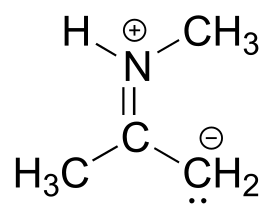
fig 21
Solved example:
Draw the major resonance contributor of the structure below. Include in your figure the appropriate curved arrows showing how you got from the given structure to your structure. Explain why your contributor is the major one. In what kind of orbitals are the two lone pairs on the oxygen?

fig 23a
Solution: In the structure above, the carbon with the positive formal charge does not have a complete octet of valence electrons. Using the curved arrow convention, a lone pair on the oxygen can be moved to the adjacent bond to the left, and the electrons in the double bond shifted over to the left (see the rules for drawing resonance contributors to convince yourself that these are ‘legal’ moves).

fig 23a
The resulting resonance contributor, in which the oxygen bears the formal charge, is the major one because all atoms have a complete octet, and there is one additional bond drawn (resonance rules #5 and #7 both apply). This system can be thought of as four parallel p orbitals (one each on C2, C3, and C4, plus one on oxygen) sharing four π electrons. One lone pair on the oxygen is in an unhybridized p orbital and is part of the conjugated π system, and the other is located in an sp2 orbital.
Also note that one additional contributor can be drawn, but it is also minor because it has a carbon with an incomplete octet:
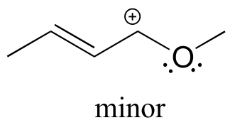
fig 23a
Exercise 2.23:
a) Draw three additional resonance contributors for the carbocation below. Include in your figure the appropriate curved arrows showing how one contributor is converted to the next.

fig 23
b) Fill in the blanks: the conjugated π system in this carbocation is composed of ______ p orbitals sharing ________ delocalized π electrons.
Exercise 2.24:
Draw the major resonance contributor for each of the anions below.

fig 24
c) Fill in the blanks: the conjugated π system in part (a) is composed of ______ p orbitals containing ________ delocalized π electrons.
Exercise 2.25: The figure below shows how the negative formal charge on the oxygen can be delocalized to the carbon indicated by an arrow. More resonance contributors can be drawn in which negative charge is delocalized to three other atoms on the molecule.
a) Circle these atoms.
b) Draw the two most important resonance contributors for the molecule.

fig 24a
A word of advice
Becoming adept at drawing resonance contributors, using the curved arrow notation to show how one contributor can be converted to another, and understanding the concepts of conjugation and resonance delocalization are some of the most challenging but also most important jobs that you will have as a beginning student of organic chemistry. If you work hard now to gain a firm grasp of these ideas, you will have come a long way toward understanding much of what follows in your organic chemistry course. Conversely, if you fail to come to grips with these concepts now, a lot of what you see later in the course will seem like a bunch of mysterious and incomprehensible lines, dots, and arrows, and you will be in for a rough ride, to say the least. More so than many other topics in organic chemistry, understanding bonding, conjugation, and resonance is something that most students really need to work on ‘in person’ with an instructor or tutor, preferably using a molecular modeling kit. Keep working problems, keep asking questions, and keep at it until it all makes sense!
Section 2.4: Non-covalent interactions#
Until now we have been focusing on understanding the covalent bonds that hold individual molecules together. We turn next to a review on the subject of non-covalent interactions between molecules, or between different functional groups within a single molecule. You have probably learned all of these concepts already in your general chemistry course, but this review will focus on applications to organic and biological chemistry, and specifically will allow us to explain differences in physical properties -such boiling points, melting points, and solubility - between different organic compounds. An understanding of noncovalent interactions is also critical for looking at the environment inside the active site of an enzyme, where much of the chemistry that we will study in this book takes place.
2.4A: Dipoles#
To understand the nature of noncovalent interactions, we first must return to covalent bonds and delve into the subject of dipoles. Many of the covalent bonds that we have seen – between two carbons, for example, or between a carbon and a hydrogen –involve the approximately equal sharing of electrons between the two atoms in the bond. In these examples, the two atoms have approximately the same electronegativity. Recall from your general chemistry course that electronegativity refers to “ the power of an atom in a molecule to attract electrons to itself” (this is the definition offered by Linus Pauling, the eminent 20th-century American chemist who was primarily responsible for developing many of the bonding concepts that we have been learning).
However, quite often in organic chemistry we deal with covalent bonds between two atoms with different electronegativities, and in these cases the sharing of electrons is not equal: the more electronegative nucleus pulls the two electrons closer. In the carbon-oxygen bond of an alcohol, for example, the two electrons in the σ bond are held more closely to the oxygen than they are to the carbon, because oxygen is significantly more electronegative than carbon. The same is true for the oxygen-hydrogen bond, as hydrogen is slightly less electronegative than carbon, and much less electronegative than oxygen.
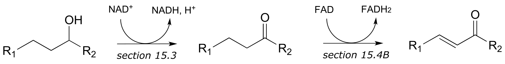
fig 25
The result of this unequal sharing is what we call a bond dipole, which exists in a polar covalent bond. A bond dipole has both negative and positive ends, or poles, where electron density is lower (the positive pole) and higher (the negative pole). The difference in electron density can be expressed using the Greek letter δ (delta) to denote ‘partial positive’ and ‘partial negative’ charge on the atoms. ‘Dipole arrows’, with a positive sign on the tail, are also used to indicated the negative (higher electron density) direction of the dipole.
The degree of polarity in a covalent bond depends on the difference in electronegativity between the two atoms. Electronegativity is a periodic trend: it increases going from left to right across a row of the periodic table of the elements, and also increases as we move up a column. Therefore, oxygen is more electronegative than nitrogen, which is in turn more electronegative than carbon. Oxygen is also more electronegative than sulfur. Fluorine, in the top right corner of the periodic table, is the most electronegative of the elements. Hydrogen is slightly less electronegative than carbon.
Periodic trends in electronegativity
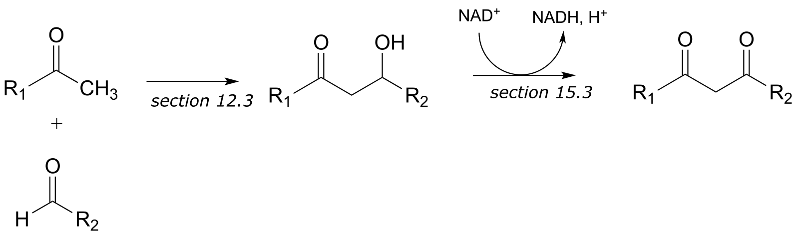
fig 25a
Exercise 2.26: Using what you about atomic orbitals, rationalize the periodic trends in electronegativity. Why does it increase from left to right, and decrease from top to bottom? This is a good question to talk through with classmates and an instructor or tutor.
Most molecules contain both polar and nonpolar covalent bonds. Depending on the location of polar bonds and bonding geometry, molecules may possess a net polarity, called a molecular dipole moment. Water, as you probably recall, has a dipole moment that results from the combined dipoles of its two oxygen-hydrogen bonds. Fluoromethane also has a dipole moment.

fig 26a
Tetrafluoromethane, however, has four polar bonds that pull equally in to the four corners of a tetahedron, meaning that although there are four bond dipoles there is no overall molecular dipole moment. Carbon dioxide also lacks a molecular dipole moment.
Exercise 2.27: Which of the molecules below have molecular dipole moments?

2.4B: Ion-ion, dipole-dipole and ion-dipole interactions#
The strongest type of non-covalent interaction is between two ionic groups of opposite charge (an ion-ion or charge-charge interaction). You probably saw lots of examples of ionic bonds in inorganic compounds in your general chemistry course: for example, table salt is composed of sodium cations and chloride anions, held in a crystal lattice by ion-ion interactions. One of the most common examples in biological organic chemistry is the interaction between a magnesium cation (Mg+2) and an anionic carboxylate or phosphate group. The figure below shows 2-phosphoglycerate, an intermediate in the glycolysis pathway, interacting with two Mg+2 ions in the active site of a glycolytic enzyme called enolase.

fig 27
Polar molecules – those with an overall dipole moment, such as acetone – can align themselves in such a way as to allow their respective positive and negative poles to interact with each other. This is called a dipole-dipole interaction.

{kind=link}
fig 28
When a charged species (an ion) interacts favorably with a polar molecule or functional group, the result is called an ion-dipole interaction. A common example of ion-dipole interaction in biological organic chemistry is that between a metal cation, most often Mg+2 or Zn+2, and the partially negative oxygen of a carbonyl.
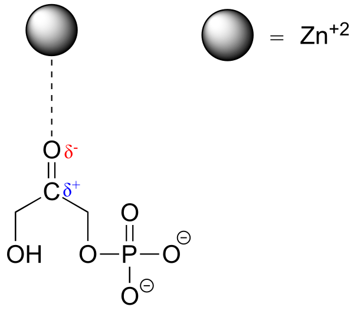
fig 29
Because the metal cation is very electronegative, this interaction has the effect of pulling electron density in the carbonyl double bond even further toward the oxygen side, increasing the partial positive charge on carbon. As we shall later, this has important implications in terms of the reactivity of carbonyl groups in biochemical reactions.
2.4C: Van der Waals forces#
Nonpolar molecules such as hydrocarbons also are subject to relatively weak but still significant attractive noncovalent forces. Van der Waals forces (also called London dispersion forces or nonpolar interactions) result from the constantly shifting electron density in any molecule. Even a nonpolar molecule will, at any given moment, have a weak, short-lived dipole. This transient dipole will induce a neighboring nonpolar molecule to develop a corresponding transient dipole of its own, with the end result that a transient dipole-dipole interaction is formed. These van der Waals forces are relatively weak, but are constantly forming and dissipating among closely-packed nonpolar molecules, and when added up the cumulative effect can become significant.
{kind=link}
2.4D: Hydrogen bonds#
Hydrogen bonds result from the interaction between a hydrogen bonded to an electronegative heteroatom – specifically a nitrogen, oxygen, or fluorine – and lone-pair electrons on a nitrogen, oxygen, or fluorine a neighboring molecule or functional group. Because a hydrogen atom is just a single proton and a single electron, when it loses electron density in a polar bond it essentially becomes an approximation of a ‘naked’ proton, capable of forming a strong interaction with a lone pair on a neighboring electronegative atom.
fig 30
Hydrogen bonds are usually depicted with dotted lines in chemical structures. A group that provides a proton to a hydrogen bond is said to be acting as a hydrogen bond donor. A group that provides an oxygen or nitrogen lone pair is said to be acting as a hydrogen bond acceptor. Many common organic functional groups can participate in the formation of hydrogen bonds, either as donors, acceptors, or both. Water and alcohols, for example, can be both hydrogen bond donors and acceptors. A carbonyl, as it lacks a hydrogen bound to an oxygen or nitrogen, can only act as a hydrogen bond acceptor.
Exercise 2.28: Classify the structures below as: A) capable of being both a hydrogen bond donor and acceptor, B) capable of being a hydrogen bond acceptor, but not a donor, or C) not capable of participating in hydrogen bonding.
fig 30A
Exercise 2.29: Draw figures that show the hydrogen bonds described below.
a) A hydrogen bond between methanol (donor) and water (acceptor).
b) A hydrogen bond between methanol (acceptor) and water (donor).
c) Two possible hydrogen bonds between methyl acetate and methylamine.
In general, hydrogen bonds are stronger than dipole-dipole interactions, but also much weaker than covalent bonds. The strength of hydrogen bonds has enormous implications in biology. Copying of DNA in the cell, for example, is based on very specific hydrogen bonding arrangements between DNA bases on complimentary strands: adenine pairs with thymine, while guanine pairs with cytidine:
Hydrogen bonds, as well as the other types of noncovalent interactions, are very important in terms of the binding of a ligand to a protein. In section 1.3D, we saw a ‘space-filling’ picture of an enzyme with its substrate bound in its active site. Here, in a two-dimensional approximation, is an image of the same substrate-enzyme pair showing how amino acid side chain (green) and parent chain (blue) groups surround and interact via hydrogen bonding with functional groups on the substrate (red).
fig 30c
Section 2.5: Physical properties of organic compounds#
An understanding of the various types of noncovalent forces allows us to explain, on a molecular level, many observable physical properties of organic compounds. In this section, we will concentrate on solubility (especially solubility in water), melting point, and boiling point.
2.5A: Solubility#
Virtually all of the organic chemistry that you will see in this course takes place in the solution phase. In the organic laboratory, reactions are often run in nonpolar or slightly polar solvents such as toluene (methylbenzene), dichloromethane, or diethylether. In recent years, much effort has been made to adapt reaction conditions to allow for the use of ‘greener’ (in other words, more environmentally friendly) solvents such as water or ethanol, which are polar and capable of hydrogen bonding. In biochemical reactions the solvent is of course water, but the ‘microenvironment’ inside an enzyme’s active site - where the actual chemistry is going on - can range from very polar to very non-polar, depending on which amino acid residues are present.
You probably remember the ‘like dissolves like’ rule you learned in general chemistry, and even before you took any chemistry at all, you probably observed at some point in your life that oil does not mix with water. Let’s revisit this rule, and put our knowledge of covalent and noncovalent bonding to work.
When considering the solubility of an organic compound in a given solvent, the most important question to ask ourselves is: how strong are the noncovalent interactions between the compound and the solvent molecules? If the solvent is polar, like water, then a smaller hydrocarbon component and/or more charged, hydrogen bonding, and other polar groups will tend to increase the solubility. If the solvent is non-polar, like hexane, then the exact opposite is true.
Imagine that you have a flask filled with water, and a selection of substances that you will test to see how well they dissolve in the water. The first substance is table salt, or sodium chloride. As you would almost certainly predict, especially if you’ve ever inadvertently taken a mouthful of water while swimming in the ocean, this ionic compound dissolves readily in water. Why? Because water, as a very polar molecule, is able to form many ion-dipole interactions with both the sodium cation and the chloride anion, the energy from which is more than enough to make up for energy required to break up the ion-ion interactions in the salt crystal.

fig 32
more images of NaCl: lattice, solution
{kind=link}
{kind=link}
The end result, then, is that in place of sodium chloride crystals, we have individual sodium cations and chloride anions surrounded by water molecules – the salt is now in solution. Charged species as a rule dissolve readily in water: in other words, they are very hydrophilic (water-loving).
Now, we’ll try a compound called biphenyl, which, like sodium chloride, is a colorless crystalline substance.

fig 10
Biphenyl does not dissolve at all in water. Why is this? Because it is a very non-polar molecule, with only carbon-carbon and carbon-hydrogen bonds. It is able to bond to itself very well through nonpolar van der Waals interactions, but it is not able to form significant attractive interactions with very polar solvent molecules like water. Thus, the energetic cost of breaking up the biphenyl-to-biphenyl interactions in the solid is high, and very little is gained in terms of new biphenyl-water interactions. Water is a terrible solvent for nonpolar hydrocarbon molecules: they are very hydrophobic (water-fearing).
Next, you try a series of increasingly large alcohol compounds, starting with methanol (1 carbon) and ending with octanol (8 carbons).
fig 33
You find that the smaller alcohols - methanol, ethanol, and propanol - dissolve easily in water, at any water/alcohol ratio that you try. This is because the water is able to form hydrogen bonds with the hydroxyl group in these molecules, and the combined energy of formation of these water-alcohol hydrogen bonds is more than enough to make up for the energy that is lost when the alcohol-alcohol (and water-water) hydrogen bonds are broken up. When you try butanol, however, you begin to notice that, as you add more and more to the water, it starts to form a layer on top of the water. Butanol is only sparingly soluble in water.
The longer-chain alcohols - pentanol, hexanol, heptanol, and octanol - are increasingly non-soluble in water. What is happening here? Clearly, the same favorable water-alcohol hydrogen bonds are still possible with these larger alcohols. The difference, of course, is that the larger alcohols have larger nonpolar, hydrophobic regions in addition to their hydrophilic hydroxyl group. At about four or five carbons, the influence of the hydrophobic part of the molecule begins to overcome that of the hydrophilic part, and water solubility is lost.
Now, try dissolving glucose in the water – even though it has six carbons just like hexanol, it also has five hydrogen-bonding, hydrophilic hydroxyl groups in addition to a sixth oxygen that is capable of being a hydrogen bond acceptor.

fig 34
We have tipped the scales to the hydrophilic side, and we find that glucose is quite soluble in water.
We saw that ethanol was very water-soluble (if it were not, drinking beer or vodka would be rather inconvenient!) How about dimethyl ether, which is a constitutional isomer of ethanol but with an ether rather than an alcohol functional group? We find that diethyl ether is much less soluble in water. Is it capable of forming hydrogen bonds with water? Yes, in fact, it is –the ether oxygen can act as a hydrogen-bond acceptor. The difference between the ether group and the alcohol group, however, is that the alcohol group is both a hydrogen bond donor and acceptor.
fig 35
The result is that the alcohol is able to form more energetically favorable interactions with the solvent compared to the ether, and the alcohol is therefore much more soluble.
Here is another easy experiment that can be done (with proper supervision) in an organic laboratory. Try dissolving benzoic acid crystals in room temperature water – you’ll find that it is not soluble. As we will learn when we study acid-base chemistry in a later chapter, carboxylic acids such as benzoic acid are relatively weak acids, and thus exist mostly in the acidic (protonated) form when added to pure water.
fig 36
Acetic acid (vinegar) is quite soluble. This is easy to explain using the small alcohol vs large alcohol argument: the hydrogen-bonding, hydrophilic effect of the carboxylic acid group is powerful enough to overcome the hydrophobic effect of a single hydrophobic methyl group on acetic acid, but not the larger hydrophobic effect of the 6-carbon benzene group on benzoic acid.
Now, try slowly adding some aqueous sodium hydroxide to the flask containing undissolved benzoic acid. As the solvent becomes more and more basic, the benzoic acid begins to dissolve, until it is completely in solution.

fig 37
What is happening here is that the benzoic acid is being converted to its conjugate base, benzoate. The neutral carboxylic acid group was not hydrophilic enough to make up for the hydrophobic benzene ring, but the carboxylate group, with its full negative charge, is much more hydrophilic. Now, the balance is tipped in favor of water solubility, as the powerfully hydrophilic anion part of the molecule drags the hydrophobic part into solution. Remember, charged species usually dissolve readily in water. If you want to precipitate the benzoic acid back out of solution, you can simply add enough hydrochloric acid to neutralize the solution and reprotonate the carboxylate.
If you are taking a lab component of your organic chemistry course, you will probably do at least one experiment in which you will use this phenomenon to physically separate an organic acid like benzoic acid from a hydrocarbon compound like biphenyl.
Similar arguments can be made to rationalize the solubility of different organic compounds in nonpolar or slightly polar solvents. In general, the greater the content of charged and polar groups in a molecule, the less soluble it tends to be in solvents such as hexane. The ionic and very hydrophilic sodium chloride, for example, is not at all soluble in hexane solvent, while the hydrophobic biphenyl is very soluble in hexane.
Because we are concentrating on the biologically relevant chemistry, let’s take a minute to review how to evaluate a compound’s solubility in water, the biological solvent:
Summary of factors contributing to water solubility:
A: How many carbons? All else being equal, more carbons means more of a non-polar/hydrophobic character, and thus lower solubility in water.
B: How many, and what kind of hydrophilic groups? The more, the greater the water solubility. In order of importance:
#1) Anything with a charged group (eg. ammonium, carboxylate, phosphate) is almost certainly water soluble, unless has a vary large nonpolar group, in which case it will most likely be soluble in the form of micelles, like a soap or detergent (see next section).
#2) Any functional group that can donate a hydrogen bond to water (eg. alcohols, amines) will significantly contribute to water solubility.
#3) Any functional group that can only accept a hydrogen bond from water (eg. ketones, aldehydes, ethers) will have a somewhat smaller but still significant effect on water solubility.
#4) Other groups that contribute to polarity (eg. alkyl halides, thiols sulfides) will make a small contribution to water solubility.
Exercise 2.30: Rank each set of three compounds below according to their solubility in water (most soluble to least):

fig 37a
Exercise 2.31: Vitamins can be classified as water-soluble or fat-soluble (consider fat to be a very non-polar ‘solvent’. Decide on a classification for each of the vitamins shown below.

fig 37b
Exercise 2.32: Both aniline and phenol are mostly insoluble in pure water. Predict the solubility of these two compounds in 10% aqueous hydrochloric acid, and explain your reasoning.
Exercise 2.33: Would you predict methanol or 2-propanol (rubbing alcohol) to be a better solvent for cyclohexanone? Why?
Because water is the biological solvent, most biological organic molecules, in order to maintain water-solubility, contain one or more charged functional groups: most often phosphate, ammonium or carboxylate.

fig 38
Note that the charge on these functional groups depends on their protonation state: spermidine, for example, could be drawn with three (uncharged) amine groups rather than the charged ammonium groups as shown, and orotate could be drawn in the uncharged carboxylic acid form. It turns out, however, that these three functional groups are all charged when in a buffer at the physiological pH of approximately 7.3. We will have much more to say about the acid-base aspects of these groups in chapter 7.
Carbohydrates often lack charged groups, but as we discussed in our ‘thought experiment’ with glucose, they are quite water-soluble due to the presence of multiple hydroxyl groups, which can hydrogen bond with water.
Some biomolecules, in contrast, contain distinctly hydrophobic components. Membrane lipids are amphipathic, meaning that they contain both hydrophobic and hydrophilic components. Cell membranes are composed of membrane lipids arranged in a ‘bilayer’, with the hydrophobic ‘tails’ pointing inward and the hydrophilic ‘heads’ forming the inner and outer surfaces, both of which are in contact with water.
{kind=link}
The nonpolar interior of the lipid bilayer is able to ‘dissolve’ hydrophobic biomolecules such as cholesterol. Polar and charged biomolecules, on the other hand, are not able to cross the membrane, because they are repelled by the hydrophobic environment of the bilayer’s interior. The transport of water-soluble molecules across a membrane can be accomplished in a controlled and specific manner by special transmembrane transport proteins, a fascinating topic that you will learn more about if you take a class in biochemistry.
A similar principle is the basis for the action of soaps and detergents. Soaps are composed of fatty acids such as stearate obtained through basic hydrolysis of triacylglycerols (section 1.3A) in fats and oils.

fig 39
{kind=link}
Like membrane lipids, fatty acids are amphipathic. In aqueous solution, the fatty acid molecules in soaps will spontaneously form micelles, a spherical structure that allows the hydrophobic tails to avoid contact with water and simultaneously form favorable van der Waals contacts with each other.
{kind=link}
Because the outside of the micelle is charged, the structure as a whole is soluble in water. Micelles will form spontaneously around small particles of oil that normally would not dissolve in water, and will carry the particle away with it into solution. We will learn more about the chemistry of soap-making in chapter 11.
Synthetic detergents are non-natural amphipathic molecules that work by the same principle as that described for soaps.

fig 41
2.5B: Boiling point and melting point#
The observable melting and boiling points of different organic molecules provides an additional illustration of the effects of noncovalent interactions. The overarching principle involved is simple: how well can a compound bind to itself? Melting and boiling are processes in which noncovalent interactions between identical molecules in a pure sample are disrupted. The stronger the noncovalent interactions, the more energy that is required, in the form of heat, to break them apart.
As a rule, larger molecules have higher boiling (and melting) points. Consider the boiling points of increasingly larger hydrocarbons. More carbons and hydrogens means a greater surface area possible for van der Waals interaction, and thus higher boiling points. Below zero degrees centigrade (and at atmospheric pressure) butane is a liquid, because the butane molecules are held together by Van der Waals forces. Above zero degrees, however, the molecules gain enough thermal energy to break apart and enter the gas phase. Octane, in contrast, remains in the liquid phase all the way up to 128oC, due to the increased van der Waals interactions made possible by the larger surface area of the individual molecules.
fig 42
The strength of intermolecular hydrogen bonding and dipole-dipole interactions is reflected in higher boiling points. Look at the trend for hexane (van der Waals interactions only), 3-hexanone (dipole-dipole interactions), and 3-hexanol (hydrogen bonding). In all three molecules, van der Waals interactions are significant. The polar ketone group allows 3-hexanone to form intermolecular dipole-dipole interactions, in addition to the weaker van der Waals interactions. 3-hexanol, because of its hydroxyl group, is able to form intermolecular hydrogen bonds, which are stronger yet.

fig 43
Of particular interest to biologists (and pretty much anything else that is alive on the planet) is the effect of hydrogen bonding in water. Because it is able to form tight networks of intermolecular hydrogen bonds, water remains in the liquid phase at temperatures up to 100 OC despite its small size. The world would obviously be a very different place if water boiled at 30 OC.
Video tutorial: boiling points
Exercise 2.34: Based on their structures, rank phenol, benzene, benzaldehyde, and benzoic acid in terms of lowest to highest boiling point. Explain your reasoning.

By thinking about noncovalent intermolecular interactions, we can also predict relative melting points. All of the same principles apply: stronger intermolecular interactions result in a higher melting point. Ionic compounds, as expected, usually have very high melting points due to the strength of ion-ion interactions. Just like with boiling points, the presence of polar and hydrogen-bonding groups on organic compounds generally leads to higher melting points. The size of a molecule influences its melting point as well as its boiling point, again due to increased van der Waals interactions between molecules.
What is different about melting point trends, that we don’t see with boiling point or solubility trends, is the importance of a molecule’s shape and its ability of pack tightly together*.* Picture yourself trying to make a stable pile of baseballs in the floor. It just doesn’t work, because spheres don’t pack together well - there is very little area of contact between each ball. It is very easy, though, to make a stack of flat objects like books.
The same concept applies to how well molecules pack together in a solid. The flat shape of aromatic compounds allows them to pack efficiently, and thus aromatics tend to have higher melting points compared to non-planar hydrocarbons with similar molecular weights. Comparing the melting points of benzene and toluene, you can see that the extra methyl group on toluene disrupts the molecule’s ability to pack tightly, thus decreasing the cumulative strength of intermolecular van der Waals forces and lowering the melting point.

fig 44
Note also that the boiling point for toluene is significantly above the boiling point of benzene! The key factor for the boiling point trend in this case is size (toluene has one more carbon), whereas for the melting point trend, shape plays a much more important role. This makes sense when you consider that melting involves ‘unpacking’ the molecules from their ordered array, whereas boiling involves simply separating them from their already loose (liquid) association with each other.
Exercise 2.35: Which would you expect to have the higher melting point, 2,3-dimethylbutane or hexane? Explain.
2.5C: Physical properties of lipids and proteins#
Lipids
An interesting biological example of the relationship between molecular structure and melting point is provided by the observable physical difference between animal fats like butter or lard, which are solid at room temperature, and vegetable oils, which are liquid. Recall (section 1.3A) that fats and oils are triacylglycerols: fatty acids linked to a glycerol backbone. In vegetable oils, the fatty acid components are unsaturated, meaning that they contain one or more double bonds. Solid animal fat, in contrast, contains mainly saturated hydrocarbon chains, with no double bonds.

fig 46
Molecular models: palmatic acid, oleic acid
{kind=link}
{kind=link}
The double bond(s) in vegetable oils cause those hydrocarbon chains to be more rigid, and ‘bent’ at an angle (remember that rotation is restricted around double bonds), with the result that they don’t pack together as closely, and thus can be broken apart (melted) more readily.
In a related context, the fluidity of a cell membrane (essentially, the melting point) is determined to a large extent by the length and degree of unsaturation of the fatty acid ‘tails’ on the membrane lipids. Longer and more saturated fatty acids make the membrane less fluid (they are able maximize van der Waals interactions), while shorter and more unsaturated fatty acids cause the membrane to be more fluid.
Proteins
The very same noncovalent forces we have just learned about are also integral to protein structure: when a protein folds up, it does so in such a way that very specific non-covalent interactions form between amino acid residues on different regions of the chain, each one becoming part of the ‘molecular glue’ that holds the chain together in its correctly folded shape. Hydrogen bonds and charge-charge interactions are particularly important in this respect. In general, the interior of a folded protein is relatively hydrophobic, while the outside surface, which of course is in constant contact with water, is very hydrophilic - many charged side chains such as aspartate, glutamate, lysine, and arginine point out of the surface of a protein structure.
Most of the proteins of ‘mesophilic’ organisms (those who thrive in intermediate temperatures, including humans) will denature - come unfolded - at high temperatures, as the heat disrupts the specific noncovalent interactions holding the protein chain together. Unfolded proteins usually are not water soluble because the more hydrophobic interior regions are no longer hidden from the solvent, so denaturing is accompanied by precipitation. Obviously, an unfolded protein also loses its functionality.
In the last few decades, we have become aware that a wide variety of microbes naturally inhabit extremely hot environments such as the boiling water of hot springs in Yellowstone National Park, or the base of a deep-sea thermal vent. How do the proteins of these ‘thermophiles’ hold up to the heat? There is nothing extraordinary about these proteins that makes them so resistant to heat, other than the fact that they have evolved so that they simply have more molecular ‘glue’ holding them together - in particular, more ionic interactions between oppositely charged residues. In just one of many examples, the three-dimensional structure of an enzyme from Pyrococcus horikoshii, a microbe isolated from a thermal vent deep in the Pacific Ocean, was compared to a very similar enzyme in humans. The thermophilic protein has a stabilizing charge-charge interaction between the terminal carboxylate group on the last amino acid in the chain and an arginine residue near the beginning of the chain.
{kind=link}
{kind=link}
fig 30b
This interaction is not present in the human version of the protein because the terminal carboxylate group is angled away from the positively-charged group on the arginine. The single charge-charge interaction is not by itself responsible for the thermostability of the P. horikoshii protein - other similar interactions throughout the protein structure also contribute (PLOS Biology 2011, 9, e1001027).
Conversely, proteins from ‘psychrophilic’ organisms - those which live in extremely cold temperatures, such as in arctic soils or in small water pockets in polar ice - have fewer stabilizing charge-charge interactions. This gives them the flexibility to function at temperatures in which mesophilic human or E. coli proteins would be frozen and inactive. On the other hand, a typical psychrophilic protein will rapidly unfold, precipitate, and lose its functionality at room temperature.
Scientists are extremely interested in thermostable proteins, because the ability to function at high temperatures can be a very desirable trait for a protein used in industrial processes. In fact, thermostable DNA polymerase from Thermus aquaticus (the enzyme is known to molecular biologists as ‘Taq polymerase’) is the enzyme that makes the PCR (polymerase chain reaction) process possible, and has earned billions of dollars in royalties for drug company Hoffman La Roche, the patent owner. Many research groups are searching for useful enzymes in thermophilic species, and others are working on ways to engineer heat stability into existing mesophilic enzymes by tinkering with their amino acid sequences to introduce new stabilizing charge-charge interactions.
**
**
Summary of Key Concepts#
Understand valence bond theory and the hybrid orbital concept. Be able to identify the hybridization of all carbons in any organic molecule. Be able to accurately draw the π-bonding picture for a double bond (side-by-side overlapping p orbitals). Be able to describe what types of orbitals are overlapping to form the single and double bonds in an organic molecule.
Be able to distinguish conjugated double bonds from isolated double bonds. Be able to accurately draw the π-bonding picture for a conjugated π system.
Understand the concept of resonance, and understand that resonance contributors are not different molecules, just different ways of drawing the same molecule.
Be able to draw resonance contributors correctly. Be able to draw curved arrows between any two contributors.
Major and minor resonance contributors: be able to evaluate the relative importance of contributors.
Understand the concept of resonance delocalization - what it means when we say that a charge is delocalized, or that π electrons are delocalized.
Recognize and understand noncovalent interactions: Van der Waals, ion-ion, ion-dipole, dipole-dipole, and hydrogen bonding. Be able to recognize whether a group is acting as a hydrogen bond donor or acceptor.
Be able to use your knowledge of noncovalent intermolecular interactions to predict trends in solubility, melting point, and boiling point.
Problems#
In questions involving drawing resonance contributors, assume that all second-row atoms should have a complete octet in all structures with the exception of positively-charged carbons.
P2.1: For each of the bonds indicated by arrows b-f in the figures below, describe the bonding picture. An example is given for bond ‘a’. Note that for a double bond (bond ‘c’), you will need to describe two bonds. Note: you are being asked to describe the bonding picture for one specific resonance contributor.
bond a: “this is a σ bond formed by the overlap of an sp3 orbital on one carbon and an sp2 orbital on another carbon.”

P2.2:
a) Draw curved arrows showing how each of the resonance contributors on the left could be converted to the one on the right.
b) Label contributors as major, minor, or approximately equivalent to each other.
P2.3: Draw a 3D-accurate picture showing the orbitals involved in bonding in the molecules below. Draw all bonds, both σ and π, as overlapping orbitals. Indicate whether each orbital is s, p, sp, sp2, or sp3, and indicate (with words or a color scheme) orbitals that are pointed into or out of the plane of the page. Locate all lone pairs in their appropriate orbitals. It is highly recommended to check your drawing with your instructor or tutor.
An example is provided for ethene, CH2CH2:
a) dimethyl ether (CH3OCH3)
b) ethanol (CH3CH2OH)
c) acetaldehyde (CH3COH)
d) hydrogen cyanide (HCN)
P2.4: Neither of the pairs of structures below are pairs of resonance contributors.
a) Explain why not.
b) What in fact is the relationship between them?
P2.5:
a-i) Describe the orbitals involved in the bonds indicated by the arrows, as in problem 2.1.

P2.6: The four compounds below appeared in the October 9 and October 25, 2006 issues of Chemical and Engineering News.
a-k) For each bond indicated by an arrow, specify the types of orbitals that are overlapping (for example, overlap between two sp3-hybridized carbons would be denoted C*sp3-Csp3*)
l) (functional group review) Which compound contains two aldehydes? Which contains an ether? Which contains an amide? Which contains a terminal alkene? Which contains an amine (and is this amine primary, secondary, tertiary, or quaternary?)
m) Give the molecular formula for the walking-stick compound

P2.7: Rank the bonds a-f below according to increasing bond length.
**
**
P2.8: Redraw the structure below, showing the 2pz orbitals that make up the conjugated π bond system.

P2.9: Draw two different (minor) resonance contributors of the structure below (the flavin group of flavin adenine dinucleotide (FAD), a biochemical oxidation/reduction molecule) in which the oxygen indicated by an arrow bears a negative formal charge and one of the circled atoms bears a positive formal charge. Include curved arrows to account for the changing positions of electrons and π bonds.

P2.10: The structure below shows an intermediate species in a reaction involving the amino acid alanine, attached to pyridoxal phosphate (vitamin B6). Draw a resonance contributor in which the only formal charges are on the oxygens.
P2.11: Below is the structure of the cholesterol-lowering drug Lovastatin. Predict the trend in bond length for
a) bonds a, b, c, and d
b) bonds e and f
P2.12: In problem P1.10, you were asked to draw four different amides with molecular formula C3H7NO. One of these constitutional isomers is significantly less soluble in water than the other three. Which one, and why?
P2.13: Below is the structure of Rimonabant, a drug candidate which is being tested as a possible treatment for alcohol/tobacco dependence and obesity (see Chemical and Engineering News, October 15, 2006, p. 24). Draw minor resonance contributors in which:
a) there is a separation of charge between the nitrogen indicated by the arrow and the oxygen.
b) there is a separation of charge between a chlorine (positive) and one of the three nitrogens.
P2.14: For the molecules below, draw minor resonance contributors in which formal charges are placed on the atoms indicated by arrows. Use curved arrows to show how you are rearranging electrons between resonance contributors.

P2.15: Genipin was recently identified as the active compound in gardenia fruit extract, a traditional Chinese medicine for the treatment of diabetes (Chemical and Engineering News June 12, 2006, p. 34; Cell Metab. 2006, 3, 417). Resonance contributors can be drawn in which the oxygen atom indicated by an arrow bears a positive formal charge. Indicate where the corresponding negative formal charge would be located in the most important of these contributors.

P2.16: Identify any isolated alkene groups in the PAC-1 structure in problem P2.14, and in the genipin structure in problem P2.15.
P2.17: The February 27, 2006 issue of Chemical and Engineering News contains an interesting article on the 100th birthday of Albert Hofmann, the inventor of the hallucinogen LSD. The structure of LSD is shown below. Several minor resonance contributors can be drawn in which the nitrogen atom indicated by an arrow bears a positive formal charge. Indicate atoms where a corresponding negative formal charge could be located in these contributors.
P2.18: The human brain contains naturally occurring cannabinoid compounds which are related in structure to ∆9-tetrahydrocannabinol, the active compound in cannabis. Cannabinoids are thought to exert an antidepressant effect. Researchers at the University of California, Irvine are studying synthetic compounds, such as the one shown below, which inhibit the degradation of natural cannabinoids in the brain. This compound has been shown to have antidepressant-like effects in rats and mice. (Chemical and Engineering News, December 19, 2005, p. 47; Proc. Natl. Acad. Sci. USA 2005, 102, 18620.)

a) Several minor resonance contributors can be drawn in which the oxygen atom indicated by an arrow bears a positive formal charge. Indicate atoms where a corresponding negative formal charge could be located in these contributors.
b) Answer the same question again, this time with the structural isomer shown below.

P2.19: Give the expected trend (lowest to highest) in boiling points for the following series of compounds.
P2.20: For each pair of molecules below, choose the one that is more water-soluble, and explain your choice.

P2.21: Intermolecular forces: For a-c below, you may want to review amino acid/protein structure basics in section 1.3D and Table 5 at the end of the book. Use abbreviations as appropriate to focus the viewer’s attention on the interaction in question.
a) Which of the 20 natural amino acids have side chains capable of forming hydrogen bonds with water?
b) Draw a picture of a hydrogen bond in a protein between an alanine main chain nitrogen and a glutamate side chain.
c) Draw a picture of a hydrogen bond in a protein between a tyrosine main chain (acting as donor) and a threonine side chain (acting as acceptor).
d) Draw a picture of an charge-charge (ionic) interaction in a protein between an aspartate and a lysine.
P2.22: In properly folded protein structures, main chain nitrogens often participate in hydrogen bonding interactions in the role of donor, but rarely as acceptor. Speculate as to why this might be so, using what you have learned in this chapter.
P2.23: Ozone, O3, is an uncharged, non-cyclic molecule. Draw a Lewis structure for ozone. Are the two oxygen-oxygen bonds the likely to be the same length? What is the bond order? Explain.
P2.24: Imagine that you hear a description of the bonding in water as being derived directly from the atomic orbital theory, without use of the hybrid orbital concept. In other words, the two bonds would be formed by the overlap of the half-filled 2py and 2pz orbitals of oxygen with the 1s orbitals of hydrogen, while the two lone pairs on oxygen would occupy the 2s and 2px orbitals. What is wrong with this picture? How would the bonding geometry differ from what is actually observed for water?
P2.25:
a) Draw a picture showing the geometry of the overlapping orbitals that form the bonding network in allene, H2CCCH2. Then, draw a Lewis structure for the molecule, using the solid/dash wedge bond convention as necessary to indicate the correct geometry of the σ bonds.
b) Draw a picture showing the geometry of the overlapping orbitals that form the bonding network in carbon dioxide.
P2.26 Below is the structure of ropinerol, a drug made by GlaxoSmithKline for the treatment of Parkinson’s disease. Is the five-membered ring part of the aromatic system? Explain your answer.
P2.27: Classify each of the molecules/ions below as aromatic or not aromatic. Explain your reasoning.

P2.28: For each of the compounds below, several minor resonance contributors can be drawn in which the atom indicated by an arrow bears a positive formal charge. Circle all atoms which could bear the corresponding negative formal charge.
P2.29: For each of the compounds below, several minor resonance contributors can be drawn in which the atom indicated by an arrow bears a negative formal charge. Circle all atoms which could bear the corresponding positive formal charge.

**
**
P2.30: In each of the cation structures below, circle all carbon atoms to which the positive formal charge can be delocalized by resonance.